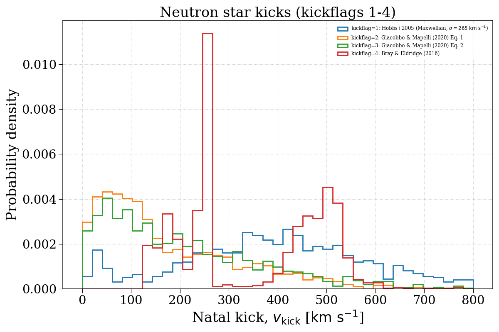
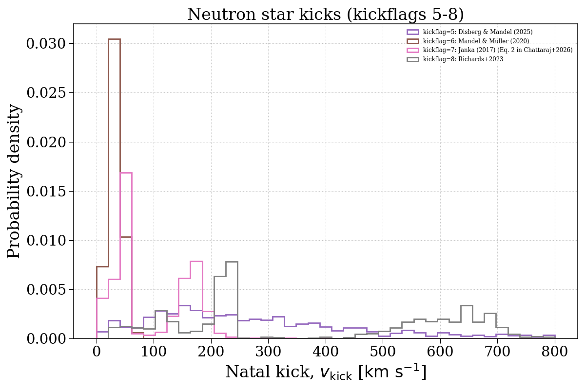
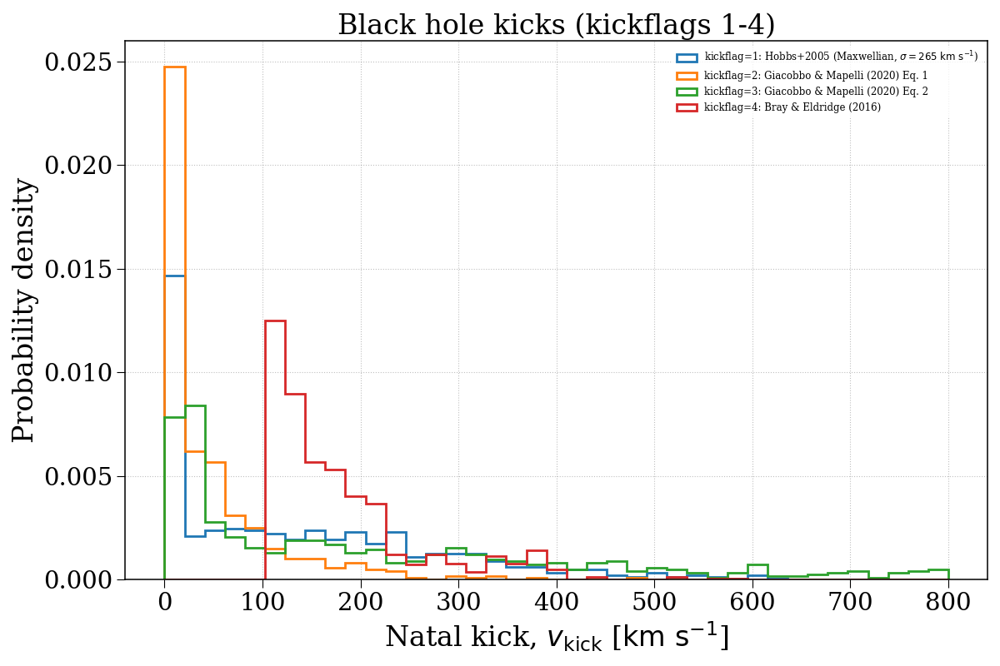
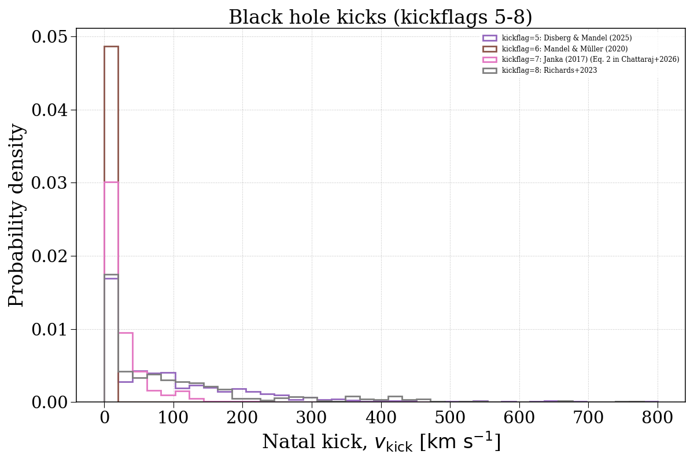

Note
Go to the end to download the full example code.
kickflag¶
This example demonstrates how changing the kickflag parameter can affect the natal kick velocity distributions of compact objects. We separate this into neutron stars and black holes.




Evolving population with kickflag = 1...
Evolving: 0%| | 0/2008 [00:00<?, ?sys/s]
Evolving: 1%|▏ | 26/2008 [00:00<00:07, 256.64sys/s]
Evolving: 3%|▎ | 52/2008 [00:00<00:18, 103.36sys/s]
Evolving: 3%|▎ | 67/2008 [00:00<00:18, 107.46sys/s]
Evolving: 4%|▍ | 85/2008 [00:00<00:15, 123.70sys/s]
Evolving: 5%|▍ | 100/2008 [00:00<00:16, 114.68sys/s]
Evolving: 6%|▌ | 118/2008 [00:00<00:14, 130.28sys/s]
Evolving: 7%|▋ | 133/2008 [00:01<00:19, 98.24sys/s]
Evolving: 8%|▊ | 155/2008 [00:01<00:19, 94.93sys/s]
Evolving: 9%|▉ | 186/2008 [00:01<00:14, 122.51sys/s]
Evolving: 10%|█ | 204/2008 [00:01<00:13, 130.73sys/s]
Evolving: 11%|█ | 219/2008 [00:01<00:14, 121.59sys/s]
Evolving: 12%|█▏ | 239/2008 [00:01<00:13, 135.59sys/s]
Evolving: 13%|█▎ | 254/2008 [00:02<00:15, 115.01sys/s]
Evolving: 13%|█▎ | 271/2008 [00:02<00:13, 124.73sys/s]
Evolving: 14%|█▍ | 285/2008 [00:02<00:15, 114.57sys/s]
Evolving: 15%|█▍ | 298/2008 [00:02<00:15, 112.31sys/s]
Evolving: 16%|█▌ | 314/2008 [00:02<00:16, 105.36sys/s]
Evolving: 17%|█▋ | 333/2008 [00:02<00:14, 113.73sys/s]
Evolving: 17%|█▋ | 348/2008 [00:02<00:14, 118.51sys/s]
Evolving: 18%|█▊ | 365/2008 [00:03<00:12, 127.12sys/s]
Evolving: 19%|█▉ | 379/2008 [00:03<00:13, 124.83sys/s]
Evolving: 20%|█▉ | 393/2008 [00:03<00:12, 125.91sys/s]
Evolving: 20%|██ | 406/2008 [00:03<00:12, 126.43sys/s]
Evolving: 21%|██ | 419/2008 [00:03<00:18, 86.35sys/s]
Evolving: 22%|██▏ | 438/2008 [00:03<00:18, 85.24sys/s]
Evolving: 23%|██▎ | 468/2008 [00:04<00:12, 122.54sys/s]
Evolving: 24%|██▍ | 483/2008 [00:04<00:12, 124.02sys/s]
Evolving: 25%|██▍ | 498/2008 [00:04<00:13, 115.03sys/s]
Evolving: 25%|██▌ | 511/2008 [00:04<00:12, 115.88sys/s]
Evolving: 26%|██▌ | 524/2008 [00:04<00:13, 112.11sys/s]
Evolving: 27%|██▋ | 541/2008 [00:04<00:12, 118.65sys/s]
Evolving: 28%|██▊ | 556/2008 [00:04<00:12, 115.16sys/s]
Evolving: 28%|██▊ | 572/2008 [00:04<00:11, 122.81sys/s]
Evolving: 29%|██▉ | 590/2008 [00:05<00:10, 136.13sys/s]
Evolving: 30%|███ | 605/2008 [00:05<00:10, 131.11sys/s]
Evolving: 31%|███ | 619/2008 [00:05<00:10, 126.43sys/s]
Evolving: 31%|███▏ | 632/2008 [00:05<00:14, 96.10sys/s]
Evolving: 32%|███▏ | 648/2008 [00:05<00:15, 85.70sys/s]
Evolving: 34%|███▍ | 679/2008 [00:05<00:10, 126.47sys/s]
Evolving: 35%|███▍ | 694/2008 [00:06<00:13, 99.20sys/s]
Evolving: 35%|███▌ | 707/2008 [00:06<00:15, 84.98sys/s]
Evolving: 37%|███▋ | 739/2008 [00:06<00:10, 122.50sys/s]
Evolving: 38%|███▊ | 755/2008 [00:06<00:10, 122.42sys/s]
Evolving: 38%|███▊ | 770/2008 [00:06<00:10, 123.60sys/s]
Evolving: 39%|███▉ | 787/2008 [00:06<00:09, 131.55sys/s]
Evolving: 40%|███▉ | 802/2008 [00:06<00:09, 133.04sys/s]
Evolving: 41%|████ | 817/2008 [00:07<00:08, 132.86sys/s]
Evolving: 41%|████▏ | 831/2008 [00:07<00:09, 123.56sys/s]
Evolving: 42%|████▏ | 844/2008 [00:07<00:09, 124.78sys/s]
Evolving: 43%|████▎ | 857/2008 [00:07<00:09, 121.48sys/s]
Evolving: 44%|████▎ | 876/2008 [00:07<00:08, 136.81sys/s]
Evolving: 44%|████▍ | 890/2008 [00:07<00:08, 135.13sys/s]
Evolving: 45%|████▌ | 904/2008 [00:07<00:08, 132.57sys/s]
Evolving: 46%|████▌ | 918/2008 [00:07<00:10, 102.34sys/s]
Evolving: 47%|████▋ | 938/2008 [00:07<00:08, 124.72sys/s]
Evolving: 47%|████▋ | 952/2008 [00:08<00:09, 116.39sys/s]
Evolving: 48%|████▊ | 965/2008 [00:08<00:11, 88.96sys/s]
Evolving: 49%|████▉ | 987/2008 [00:08<00:08, 115.65sys/s]
Evolving: 50%|████▉ | 1001/2008 [00:08<00:08, 119.59sys/s]
Evolving: 51%|█████ | 1015/2008 [00:08<00:10, 93.84sys/s]
Evolving: 52%|█████▏ | 1038/2008 [00:08<00:08, 117.08sys/s]
Evolving: 52%|█████▏ | 1053/2008 [00:09<00:07, 122.69sys/s]
Evolving: 53%|█████▎ | 1069/2008 [00:09<00:07, 127.18sys/s]
Evolving: 54%|█████▍ | 1084/2008 [00:09<00:07, 131.78sys/s]
Evolving: 55%|█████▍ | 1099/2008 [00:09<00:06, 131.25sys/s]
Evolving: 55%|█████▌ | 1113/2008 [00:09<00:10, 83.82sys/s]
Evolving: 56%|█████▋ | 1130/2008 [00:09<00:08, 98.02sys/s]
Evolving: 57%|█████▋ | 1143/2008 [00:10<00:10, 86.02sys/s]
Evolving: 58%|█████▊ | 1155/2008 [00:10<00:10, 82.33sys/s]
Evolving: 59%|█████▉ | 1185/2008 [00:10<00:06, 124.66sys/s]
Evolving: 60%|█████▉ | 1201/2008 [00:10<00:06, 121.00sys/s]
Evolving: 61%|██████ | 1216/2008 [00:10<00:07, 99.84sys/s]
Evolving: 61%|██████ | 1228/2008 [00:10<00:07, 103.10sys/s]
Evolving: 62%|██████▏ | 1240/2008 [00:10<00:07, 99.96sys/s]
Evolving: 63%|██████▎ | 1260/2008 [00:11<00:06, 119.91sys/s]
Evolving: 63%|██████▎ | 1274/2008 [00:11<00:06, 113.18sys/s]
Evolving: 64%|██████▍ | 1287/2008 [00:11<00:07, 94.73sys/s]
Evolving: 65%|██████▍ | 1298/2008 [00:11<00:07, 93.78sys/s]
Evolving: 65%|██████▌ | 1309/2008 [00:11<00:08, 82.31sys/s]
Evolving: 66%|██████▋ | 1335/2008 [00:11<00:05, 119.47sys/s]
Evolving: 67%|██████▋ | 1349/2008 [00:11<00:05, 121.80sys/s]
Evolving: 68%|██████▊ | 1363/2008 [00:12<00:06, 98.16sys/s]
Evolving: 68%|██████▊ | 1375/2008 [00:12<00:07, 82.44sys/s]
Evolving: 70%|███████ | 1407/2008 [00:12<00:04, 127.07sys/s]
Evolving: 71%|███████ | 1423/2008 [00:12<00:04, 128.73sys/s]
Evolving: 72%|███████▏ | 1438/2008 [00:12<00:04, 128.02sys/s]
Evolving: 72%|███████▏ | 1454/2008 [00:12<00:04, 133.02sys/s]
Evolving: 73%|███████▎ | 1469/2008 [00:12<00:05, 102.72sys/s]
Evolving: 74%|███████▍ | 1490/2008 [00:13<00:04, 121.82sys/s]
Evolving: 75%|███████▍ | 1505/2008 [00:13<00:03, 128.16sys/s]
Evolving: 76%|███████▌ | 1520/2008 [00:13<00:03, 128.61sys/s]
Evolving: 76%|███████▋ | 1534/2008 [00:13<00:03, 130.98sys/s]
Evolving: 77%|███████▋ | 1548/2008 [00:13<00:03, 127.89sys/s]
Evolving: 78%|███████▊ | 1562/2008 [00:13<00:04, 91.04sys/s]
Evolving: 79%|███████▉ | 1585/2008 [00:14<00:04, 85.30sys/s]
Evolving: 80%|████████ | 1611/2008 [00:14<00:04, 93.34sys/s]
Evolving: 82%|████████▏ | 1637/2008 [00:14<00:03, 113.08sys/s]
Evolving: 82%|████████▏ | 1654/2008 [00:14<00:02, 122.10sys/s]
Evolving: 83%|████████▎ | 1668/2008 [00:14<00:03, 102.11sys/s]
Evolving: 84%|████████▍ | 1689/2008 [00:14<00:02, 120.47sys/s]
Evolving: 85%|████████▍ | 1703/2008 [00:15<00:02, 123.98sys/s]
Evolving: 86%|████████▌ | 1718/2008 [00:15<00:02, 122.20sys/s]
Evolving: 86%|████████▋ | 1734/2008 [00:15<00:02, 130.01sys/s]
Evolving: 87%|████████▋ | 1748/2008 [00:15<00:01, 130.56sys/s]
Evolving: 88%|████████▊ | 1762/2008 [00:15<00:02, 121.08sys/s]
Evolving: 88%|████████▊ | 1775/2008 [00:15<00:02, 101.30sys/s]
Evolving: 89%|████████▉ | 1791/2008 [00:15<00:01, 112.74sys/s]
Evolving: 90%|████████▉ | 1806/2008 [00:15<00:01, 120.11sys/s]
Evolving: 91%|█████████ | 1822/2008 [00:16<00:01, 120.52sys/s]
Evolving: 91%|█████████▏| 1836/2008 [00:16<00:01, 123.56sys/s]
Evolving: 92%|█████████▏| 1850/2008 [00:16<00:01, 127.22sys/s]
Evolving: 93%|█████████▎| 1865/2008 [00:16<00:01, 133.19sys/s]
Evolving: 94%|█████████▎| 1879/2008 [00:16<00:01, 119.05sys/s]
Evolving: 94%|█████████▍| 1893/2008 [00:16<00:00, 124.46sys/s]
Evolving: 95%|█████████▌| 1908/2008 [00:16<00:00, 128.64sys/s]
Evolving: 96%|█████████▌| 1922/2008 [00:16<00:01, 82.24sys/s]
Evolving: 97%|█████████▋| 1952/2008 [00:17<00:00, 114.17sys/s]
Evolving: 98%|█████████▊| 1972/2008 [00:17<00:00, 131.57sys/s]
Evolving: 99%|█████████▉| 1988/2008 [00:17<00:00, 123.73sys/s]
Evolving: 100%|█████████▉| 2002/2008 [00:17<00:00, 126.79sys/s]
Evolving: 100%|██████████| 2008/2008 [00:17<00:00, 114.56sys/s]
[Time taken: 17.8415 seconds]
Evolving population with kickflag = 2...
Evolving: 0%| | 0/2008 [00:00<?, ?sys/s]
Evolving: 0%| | 8/2008 [00:00<00:27, 71.62sys/s]
Evolving: 1%| | 24/2008 [00:00<00:16, 118.41sys/s]
Evolving: 2%|▏ | 36/2008 [00:00<00:17, 113.53sys/s]
Evolving: 2%|▏ | 48/2008 [00:00<00:27, 71.58sys/s]
Evolving: 3%|▎ | 57/2008 [00:00<00:27, 72.24sys/s]
Evolving: 4%|▍ | 84/2008 [00:00<00:15, 121.94sys/s]
Evolving: 5%|▍ | 99/2008 [00:01<00:18, 102.23sys/s]
Evolving: 6%|▌ | 122/2008 [00:01<00:14, 130.82sys/s]
Evolving: 7%|▋ | 138/2008 [00:01<00:18, 100.24sys/s]
Evolving: 8%|▊ | 155/2008 [00:01<00:19, 92.78sys/s]
Evolving: 9%|▉ | 186/2008 [00:01<00:14, 122.42sys/s]
Evolving: 10%|█ | 207/2008 [00:01<00:13, 134.52sys/s]
Evolving: 11%|█ | 223/2008 [00:01<00:13, 128.61sys/s]
Evolving: 12%|█▏ | 237/2008 [00:02<00:14, 124.09sys/s]
Evolving: 12%|█▎ | 251/2008 [00:02<00:16, 107.77sys/s]
Evolving: 13%|█▎ | 270/2008 [00:02<00:14, 122.25sys/s]
Evolving: 14%|█▍ | 284/2008 [00:02<00:15, 110.41sys/s]
Evolving: 15%|█▍ | 298/2008 [00:02<00:14, 115.89sys/s]
Evolving: 16%|█▌ | 314/2008 [00:02<00:15, 110.51sys/s]
Evolving: 16%|█▋ | 331/2008 [00:02<00:13, 123.23sys/s]
Evolving: 17%|█▋ | 345/2008 [00:03<00:14, 114.63sys/s]
Evolving: 18%|█▊ | 361/2008 [00:03<00:13, 123.42sys/s]
Evolving: 19%|█▊ | 374/2008 [00:03<00:13, 123.40sys/s]
Evolving: 19%|█▉ | 387/2008 [00:03<00:13, 116.22sys/s]
Evolving: 20%|██ | 402/2008 [00:03<00:13, 120.52sys/s]
Evolving: 21%|██ | 415/2008 [00:03<00:19, 82.77sys/s]
Evolving: 22%|██▏ | 438/2008 [00:04<00:17, 89.20sys/s]
Evolving: 23%|██▎ | 467/2008 [00:04<00:12, 125.72sys/s]
Evolving: 24%|██▍ | 483/2008 [00:04<00:12, 122.39sys/s]
Evolving: 25%|██▍ | 498/2008 [00:04<00:13, 115.64sys/s]
Evolving: 25%|██▌ | 511/2008 [00:04<00:12, 115.83sys/s]
Evolving: 26%|██▌ | 524/2008 [00:04<00:13, 112.86sys/s]
Evolving: 27%|██▋ | 536/2008 [00:04<00:13, 112.81sys/s]
Evolving: 28%|██▊ | 555/2008 [00:04<00:11, 131.29sys/s]
Evolving: 28%|██▊ | 569/2008 [00:05<00:11, 129.79sys/s]
Evolving: 29%|██▉ | 583/2008 [00:05<00:11, 121.77sys/s]
Evolving: 30%|██▉ | 598/2008 [00:05<00:11, 126.70sys/s]
Evolving: 30%|███ | 612/2008 [00:05<00:10, 127.39sys/s]
Evolving: 31%|███ | 626/2008 [00:05<00:11, 124.30sys/s]
Evolving: 32%|███▏ | 639/2008 [00:05<00:13, 102.92sys/s]
Evolving: 32%|███▏ | 650/2008 [00:05<00:16, 80.08sys/s]
Evolving: 34%|███▍ | 680/2008 [00:05<00:10, 125.69sys/s]
Evolving: 35%|███▍ | 696/2008 [00:06<00:13, 98.57sys/s]
Evolving: 35%|███▌ | 709/2008 [00:06<00:14, 86.60sys/s]
Evolving: 37%|███▋ | 737/2008 [00:06<00:10, 119.87sys/s]
Evolving: 37%|███▋ | 752/2008 [00:06<00:10, 115.84sys/s]
Evolving: 38%|███▊ | 769/2008 [00:06<00:10, 123.11sys/s]
Evolving: 39%|███▉ | 784/2008 [00:06<00:09, 127.32sys/s]
Evolving: 40%|███▉ | 799/2008 [00:07<00:09, 125.91sys/s]
Evolving: 41%|████ | 814/2008 [00:07<00:09, 129.53sys/s]
Evolving: 41%|████ | 828/2008 [00:07<00:09, 123.62sys/s]
Evolving: 42%|████▏ | 844/2008 [00:07<00:08, 132.85sys/s]
Evolving: 43%|████▎ | 858/2008 [00:07<00:09, 125.99sys/s]
Evolving: 44%|████▎ | 875/2008 [00:07<00:08, 136.90sys/s]
Evolving: 44%|████▍ | 890/2008 [00:07<00:08, 137.26sys/s]
Evolving: 45%|████▌ | 905/2008 [00:07<00:08, 131.09sys/s]
Evolving: 46%|████▌ | 919/2008 [00:08<00:10, 104.34sys/s]
Evolving: 46%|████▋ | 931/2008 [00:08<00:10, 100.59sys/s]
Evolving: 47%|████▋ | 950/2008 [00:08<00:09, 113.01sys/s]
Evolving: 48%|████▊ | 963/2008 [00:08<00:12, 84.19sys/s]
Evolving: 49%|████▉ | 988/2008 [00:08<00:09, 107.92sys/s]
Evolving: 50%|█████ | 1008/2008 [00:08<00:07, 125.39sys/s]
Evolving: 51%|█████ | 1023/2008 [00:09<00:09, 108.69sys/s]
Evolving: 52%|█████▏ | 1039/2008 [00:09<00:08, 115.89sys/s]
Evolving: 52%|█████▏ | 1054/2008 [00:09<00:07, 122.70sys/s]
Evolving: 53%|█████▎ | 1068/2008 [00:09<00:07, 124.23sys/s]
Evolving: 54%|█████▍ | 1082/2008 [00:09<00:07, 125.94sys/s]
Evolving: 55%|█████▍ | 1099/2008 [00:09<00:06, 135.36sys/s]
Evolving: 55%|█████▌ | 1114/2008 [00:09<00:10, 84.79sys/s]
Evolving: 56%|█████▋ | 1130/2008 [00:10<00:09, 96.49sys/s]
Evolving: 57%|█████▋ | 1143/2008 [00:10<00:09, 88.03sys/s]
Evolving: 58%|█████▊ | 1155/2008 [00:10<00:10, 79.47sys/s]
Evolving: 59%|█████▉ | 1187/2008 [00:10<00:07, 114.41sys/s]
Evolving: 60%|█████▉ | 1204/2008 [00:10<00:06, 123.23sys/s]
Evolving: 61%|██████ | 1218/2008 [00:10<00:07, 105.60sys/s]
Evolving: 61%|██████▏ | 1230/2008 [00:10<00:07, 107.60sys/s]
Evolving: 62%|██████▏ | 1242/2008 [00:11<00:07, 104.68sys/s]
Evolving: 63%|██████▎ | 1259/2008 [00:11<00:06, 118.39sys/s]
Evolving: 63%|██████▎ | 1272/2008 [00:11<00:06, 117.26sys/s]
Evolving: 64%|██████▍ | 1285/2008 [00:11<00:08, 88.89sys/s]
Evolving: 65%|██████▍ | 1296/2008 [00:11<00:08, 88.88sys/s]
Evolving: 65%|██████▌ | 1306/2008 [00:11<00:09, 77.18sys/s]
Evolving: 66%|██████▋ | 1335/2008 [00:11<00:05, 121.93sys/s]
Evolving: 67%|██████▋ | 1350/2008 [00:12<00:05, 122.27sys/s]
Evolving: 68%|██████▊ | 1364/2008 [00:12<00:06, 100.80sys/s]
Evolving: 69%|██████▊ | 1376/2008 [00:12<00:07, 82.53sys/s]
Evolving: 70%|███████ | 1410/2008 [00:12<00:04, 124.39sys/s]
Evolving: 71%|███████ | 1428/2008 [00:12<00:04, 133.44sys/s]
Evolving: 72%|███████▏ | 1444/2008 [00:12<00:04, 129.70sys/s]
Evolving: 73%|███████▎ | 1459/2008 [00:13<00:04, 123.39sys/s]
Evolving: 73%|███████▎ | 1473/2008 [00:13<00:04, 113.41sys/s]
Evolving: 74%|███████▍ | 1491/2008 [00:13<00:04, 126.30sys/s]
Evolving: 75%|███████▍ | 1505/2008 [00:13<00:03, 127.30sys/s]
Evolving: 76%|███████▌ | 1520/2008 [00:13<00:03, 131.75sys/s]
Evolving: 76%|███████▋ | 1534/2008 [00:13<00:03, 132.00sys/s]
Evolving: 77%|███████▋ | 1548/2008 [00:13<00:03, 130.91sys/s]
Evolving: 78%|███████▊ | 1562/2008 [00:13<00:04, 94.25sys/s]
Evolving: 79%|███████▊ | 1580/2008 [00:14<00:03, 111.18sys/s]
Evolving: 79%|███████▉ | 1593/2008 [00:14<00:04, 92.80sys/s]
Evolving: 80%|████████ | 1608/2008 [00:14<00:03, 103.67sys/s]
Evolving: 81%|████████ | 1620/2008 [00:14<00:03, 98.40sys/s]
Evolving: 82%|████████▏ | 1637/2008 [00:14<00:03, 103.50sys/s]
Evolving: 83%|████████▎ | 1657/2008 [00:14<00:02, 125.22sys/s]
Evolving: 83%|████████▎ | 1671/2008 [00:14<00:03, 99.10sys/s]
Evolving: 84%|████████▍ | 1689/2008 [00:15<00:02, 114.15sys/s]
Evolving: 85%|████████▍ | 1704/2008 [00:15<00:02, 121.44sys/s]
Evolving: 86%|████████▌ | 1718/2008 [00:15<00:02, 125.95sys/s]
Evolving: 86%|████████▋ | 1733/2008 [00:15<00:02, 124.88sys/s]
Evolving: 87%|████████▋ | 1748/2008 [00:15<00:01, 130.06sys/s]
Evolving: 88%|████████▊ | 1762/2008 [00:15<00:01, 127.10sys/s]
Evolving: 88%|████████▊ | 1776/2008 [00:15<00:02, 98.44sys/s]
Evolving: 89%|████████▉ | 1790/2008 [00:15<00:02, 106.79sys/s]
Evolving: 90%|████████▉ | 1807/2008 [00:16<00:01, 119.28sys/s]
Evolving: 91%|█████████ | 1822/2008 [00:16<00:01, 124.67sys/s]
Evolving: 91%|█████████▏| 1836/2008 [00:16<00:01, 124.99sys/s]
Evolving: 92%|█████████▏| 1850/2008 [00:16<00:01, 128.05sys/s]
Evolving: 93%|█████████▎| 1864/2008 [00:16<00:01, 131.05sys/s]
Evolving: 94%|█████████▎| 1878/2008 [00:16<00:01, 118.76sys/s]
Evolving: 94%|█████████▍| 1894/2008 [00:16<00:00, 129.17sys/s]
Evolving: 95%|█████████▌| 1909/2008 [00:16<00:00, 128.34sys/s]
Evolving: 96%|█████████▌| 1923/2008 [00:17<00:01, 82.20sys/s]
Evolving: 97%|█████████▋| 1952/2008 [00:17<00:00, 115.06sys/s]
Evolving: 98%|█████████▊| 1972/2008 [00:17<00:00, 131.59sys/s]
Evolving: 99%|█████████▉| 1988/2008 [00:17<00:00, 126.33sys/s]
Evolving: 100%|█████████▉| 2003/2008 [00:17<00:00, 127.31sys/s]
Evolving: 100%|██████████| 2008/2008 [00:17<00:00, 113.42sys/s]
[Time taken: 17.8690 seconds]
Evolving population with kickflag = 3...
Evolving: 0%| | 0/2008 [00:00<?, ?sys/s]
Evolving: 0%| | 10/2008 [00:00<00:21, 92.42sys/s]
Evolving: 1%| | 22/2008 [00:00<00:19, 101.37sys/s]
Evolving: 2%|▏ | 33/2008 [00:00<00:19, 102.22sys/s]
Evolving: 2%|▏ | 44/2008 [00:00<00:31, 62.68sys/s]
Evolving: 3%|▎ | 54/2008 [00:00<00:28, 69.32sys/s]
Evolving: 4%|▍ | 84/2008 [00:00<00:15, 126.77sys/s]
Evolving: 5%|▍ | 100/2008 [00:00<00:16, 116.25sys/s]
Evolving: 6%|▌ | 118/2008 [00:01<00:14, 130.89sys/s]
Evolving: 7%|▋ | 133/2008 [00:01<00:19, 96.25sys/s]
Evolving: 8%|▊ | 155/2008 [00:01<00:19, 94.78sys/s]
Evolving: 9%|▉ | 186/2008 [00:01<00:14, 126.46sys/s]
Evolving: 10%|█ | 203/2008 [00:01<00:13, 135.05sys/s]
Evolving: 11%|█ | 219/2008 [00:01<00:14, 121.57sys/s]
Evolving: 12%|█▏ | 238/2008 [00:02<00:13, 136.07sys/s]
Evolving: 13%|█▎ | 254/2008 [00:02<00:15, 111.69sys/s]
Evolving: 14%|█▎ | 273/2008 [00:02<00:15, 112.99sys/s]
Evolving: 14%|█▍ | 286/2008 [00:02<00:17, 99.24sys/s]
Evolving: 16%|█▌ | 312/2008 [00:02<00:12, 131.11sys/s]
Evolving: 16%|█▋ | 328/2008 [00:02<00:13, 126.26sys/s]
Evolving: 17%|█▋ | 343/2008 [00:03<00:13, 124.61sys/s]
Evolving: 18%|█▊ | 357/2008 [00:03<00:13, 122.45sys/s]
Evolving: 18%|█▊ | 370/2008 [00:03<00:14, 111.37sys/s]
Evolving: 19%|█▉ | 389/2008 [00:03<00:12, 127.60sys/s]
Evolving: 20%|██ | 403/2008 [00:03<00:12, 128.46sys/s]
Evolving: 21%|██ | 417/2008 [00:03<00:16, 95.79sys/s]
Evolving: 22%|██▏ | 438/2008 [00:04<00:18, 87.13sys/s]
Evolving: 23%|██▎ | 468/2008 [00:04<00:12, 125.19sys/s]
Evolving: 24%|██▍ | 484/2008 [00:04<00:12, 124.84sys/s]
Evolving: 25%|██▍ | 499/2008 [00:04<00:13, 113.84sys/s]
Evolving: 26%|██▌ | 514/2008 [00:04<00:12, 119.87sys/s]
Evolving: 26%|██▋ | 528/2008 [00:04<00:12, 118.02sys/s]
Evolving: 27%|██▋ | 541/2008 [00:04<00:12, 120.40sys/s]
Evolving: 28%|██▊ | 556/2008 [00:04<00:13, 107.05sys/s]
Evolving: 28%|██▊ | 572/2008 [00:05<00:12, 118.94sys/s]
Evolving: 29%|██▉ | 590/2008 [00:05<00:10, 133.28sys/s]
Evolving: 30%|███ | 605/2008 [00:05<00:10, 129.98sys/s]
Evolving: 31%|███ | 619/2008 [00:05<00:10, 128.06sys/s]
Evolving: 32%|███▏ | 633/2008 [00:05<00:14, 95.23sys/s]
Evolving: 32%|███▏ | 648/2008 [00:05<00:16, 83.49sys/s]
Evolving: 34%|███▍ | 681/2008 [00:05<00:10, 130.37sys/s]
Evolving: 35%|███▍ | 698/2008 [00:06<00:12, 102.82sys/s]
Evolving: 35%|███▌ | 712/2008 [00:06<00:14, 91.86sys/s]
Evolving: 37%|███▋ | 736/2008 [00:06<00:10, 118.45sys/s]
Evolving: 37%|███▋ | 752/2008 [00:06<00:10, 115.56sys/s]
Evolving: 38%|███▊ | 766/2008 [00:06<00:10, 119.85sys/s]
Evolving: 39%|███▉ | 782/2008 [00:06<00:10, 119.73sys/s]
Evolving: 40%|███▉ | 799/2008 [00:07<00:09, 123.30sys/s]
Evolving: 41%|████ | 817/2008 [00:07<00:08, 132.51sys/s]
Evolving: 41%|████▏ | 831/2008 [00:07<00:09, 124.91sys/s]
Evolving: 42%|████▏ | 846/2008 [00:07<00:09, 128.51sys/s]
Evolving: 43%|████▎ | 860/2008 [00:07<00:08, 129.88sys/s]
Evolving: 44%|████▎ | 874/2008 [00:07<00:08, 132.33sys/s]
Evolving: 44%|████▍ | 888/2008 [00:07<00:08, 131.68sys/s]
Evolving: 45%|████▍ | 902/2008 [00:07<00:08, 129.53sys/s]
Evolving: 46%|████▌ | 916/2008 [00:08<00:11, 95.98sys/s]
Evolving: 47%|████▋ | 941/2008 [00:08<00:08, 129.64sys/s]
Evolving: 48%|████▊ | 956/2008 [00:08<00:08, 129.88sys/s]
Evolving: 48%|████▊ | 971/2008 [00:08<00:11, 87.57sys/s]
Evolving: 50%|████▉ | 997/2008 [00:08<00:08, 114.61sys/s]
Evolving: 50%|█████ | 1012/2008 [00:08<00:11, 89.93sys/s]
Evolving: 52%|█████▏ | 1040/2008 [00:09<00:07, 123.14sys/s]
Evolving: 53%|█████▎ | 1057/2008 [00:09<00:07, 125.24sys/s]
Evolving: 53%|█████▎ | 1073/2008 [00:09<00:07, 129.58sys/s]
Evolving: 54%|█████▍ | 1089/2008 [00:09<00:06, 134.13sys/s]
Evolving: 55%|█████▌ | 1105/2008 [00:09<00:06, 134.52sys/s]
Evolving: 56%|█████▌ | 1120/2008 [00:09<00:11, 80.47sys/s]
Evolving: 57%|█████▋ | 1137/2008 [00:10<00:10, 81.04sys/s]
Evolving: 58%|█████▊ | 1155/2008 [00:10<00:09, 86.66sys/s]
Evolving: 59%|█████▉ | 1187/2008 [00:10<00:07, 112.41sys/s]
Evolving: 60%|██████ | 1206/2008 [00:10<00:06, 126.18sys/s]
Evolving: 61%|██████ | 1221/2008 [00:10<00:08, 95.59sys/s]
Evolving: 62%|██████▏ | 1235/2008 [00:11<00:08, 94.90sys/s]
Evolving: 63%|██████▎ | 1262/2008 [00:11<00:05, 124.78sys/s]
Evolving: 64%|██████▎ | 1277/2008 [00:11<00:08, 88.37sys/s]
Evolving: 64%|██████▍ | 1293/2008 [00:11<00:07, 91.82sys/s]
Evolving: 65%|██████▍ | 1305/2008 [00:11<00:07, 91.61sys/s]
Evolving: 66%|██████▋ | 1332/2008 [00:11<00:05, 124.60sys/s]
Evolving: 67%|██████▋ | 1347/2008 [00:11<00:05, 122.51sys/s]
Evolving: 68%|██████▊ | 1361/2008 [00:12<00:06, 101.07sys/s]
Evolving: 68%|██████▊ | 1375/2008 [00:12<00:07, 88.11sys/s]
Evolving: 70%|███████ | 1407/2008 [00:12<00:04, 131.16sys/s]
Evolving: 71%|███████ | 1424/2008 [00:12<00:04, 134.91sys/s]
Evolving: 72%|███████▏ | 1440/2008 [00:12<00:04, 131.84sys/s]
Evolving: 72%|███████▏ | 1455/2008 [00:12<00:04, 129.93sys/s]
Evolving: 73%|███████▎ | 1470/2008 [00:13<00:04, 107.93sys/s]
Evolving: 74%|███████▍ | 1488/2008 [00:13<00:04, 120.35sys/s]
Evolving: 75%|███████▍ | 1504/2008 [00:13<00:03, 127.03sys/s]
Evolving: 76%|███████▌ | 1519/2008 [00:13<00:03, 130.19sys/s]
Evolving: 76%|███████▋ | 1534/2008 [00:13<00:03, 134.41sys/s]
Evolving: 77%|███████▋ | 1549/2008 [00:13<00:03, 128.64sys/s]
Evolving: 78%|███████▊ | 1563/2008 [00:13<00:04, 93.01sys/s]
Evolving: 79%|███████▉ | 1585/2008 [00:14<00:04, 85.15sys/s]
Evolving: 80%|████████ | 1611/2008 [00:14<00:04, 94.03sys/s]
Evolving: 82%|████████▏ | 1637/2008 [00:14<00:03, 113.54sys/s]
Evolving: 82%|████████▏ | 1654/2008 [00:14<00:02, 120.72sys/s]
Evolving: 83%|████████▎ | 1668/2008 [00:14<00:03, 101.13sys/s]
Evolving: 84%|████████▍ | 1688/2008 [00:15<00:02, 117.77sys/s]
Evolving: 85%|████████▍ | 1703/2008 [00:15<00:02, 124.38sys/s]
Evolving: 86%|████████▌ | 1717/2008 [00:15<00:02, 125.16sys/s]
Evolving: 86%|████████▋ | 1733/2008 [00:15<00:02, 128.25sys/s]
Evolving: 87%|████████▋ | 1747/2008 [00:15<00:02, 128.06sys/s]
Evolving: 88%|████████▊ | 1761/2008 [00:15<00:01, 129.48sys/s]
Evolving: 88%|████████▊ | 1775/2008 [00:15<00:02, 100.41sys/s]
Evolving: 89%|████████▉ | 1791/2008 [00:15<00:01, 110.04sys/s]
Evolving: 90%|████████▉ | 1806/2008 [00:16<00:01, 118.17sys/s]
Evolving: 91%|█████████ | 1822/2008 [00:16<00:01, 124.84sys/s]
Evolving: 91%|█████████▏| 1836/2008 [00:16<00:01, 117.22sys/s]
Evolving: 92%|█████████▏| 1851/2008 [00:16<00:01, 111.76sys/s]
Evolving: 93%|█████████▎| 1867/2008 [00:16<00:01, 119.96sys/s]
Evolving: 94%|█████████▍| 1884/2008 [00:16<00:00, 127.00sys/s]
Evolving: 95%|█████████▍| 1899/2008 [00:16<00:00, 130.03sys/s]
Evolving: 95%|█████████▌| 1913/2008 [00:16<00:00, 123.33sys/s]
Evolving: 96%|█████████▌| 1926/2008 [00:17<00:00, 88.94sys/s]
Evolving: 97%|█████████▋| 1952/2008 [00:17<00:00, 117.89sys/s]
Evolving: 98%|█████████▊| 1971/2008 [00:17<00:00, 132.95sys/s]
Evolving: 99%|█████████▉| 1986/2008 [00:17<00:00, 124.90sys/s]
Evolving: 100%|█████████▉| 2000/2008 [00:17<00:00, 126.35sys/s]
Evolving: 100%|██████████| 2008/2008 [00:17<00:00, 113.72sys/s]
[Time taken: 17.8313 seconds]
Evolving population with kickflag = 4...
Evolving: 0%| | 0/2008 [00:00<?, ?sys/s]
Evolving: 0%| | 10/2008 [00:00<00:21, 93.34sys/s]
Evolving: 1%| | 20/2008 [00:00<00:23, 85.61sys/s]
Evolving: 2%|▏ | 37/2008 [00:00<00:16, 117.06sys/s]
Evolving: 2%|▏ | 49/2008 [00:00<00:26, 75.18sys/s]
Evolving: 3%|▎ | 59/2008 [00:00<00:24, 79.78sys/s]
Evolving: 4%|▍ | 82/2008 [00:00<00:16, 114.94sys/s]
Evolving: 5%|▍ | 95/2008 [00:00<00:16, 115.83sys/s]
Evolving: 5%|▌ | 108/2008 [00:01<00:15, 119.40sys/s]
Evolving: 6%|▌ | 124/2008 [00:01<00:15, 124.83sys/s]
Evolving: 7%|▋ | 138/2008 [00:01<00:18, 98.53sys/s]
Evolving: 8%|▊ | 155/2008 [00:01<00:21, 86.31sys/s]
Evolving: 9%|▉ | 186/2008 [00:01<00:15, 119.48sys/s]
Evolving: 10%|█ | 205/2008 [00:01<00:13, 133.23sys/s]
Evolving: 11%|█ | 220/2008 [00:01<00:13, 129.56sys/s]
Evolving: 12%|█▏ | 234/2008 [00:02<00:13, 131.31sys/s]
Evolving: 12%|█▏ | 248/2008 [00:02<00:16, 103.79sys/s]
Evolving: 13%|█▎ | 271/2008 [00:02<00:13, 129.05sys/s]
Evolving: 14%|█▍ | 286/2008 [00:02<00:17, 98.16sys/s]
Evolving: 16%|█▌ | 313/2008 [00:02<00:13, 129.64sys/s]
Evolving: 16%|█▋ | 329/2008 [00:02<00:14, 116.93sys/s]
Evolving: 17%|█▋ | 345/2008 [00:03<00:13, 120.02sys/s]
Evolving: 18%|█▊ | 359/2008 [00:03<00:13, 120.88sys/s]
Evolving: 19%|█▊ | 373/2008 [00:03<00:13, 118.67sys/s]
Evolving: 19%|█▉ | 386/2008 [00:03<00:13, 120.17sys/s]
Evolving: 20%|█▉ | 399/2008 [00:03<00:13, 118.68sys/s]
Evolving: 21%|██ | 414/2008 [00:03<00:18, 88.16sys/s]
Evolving: 22%|██▏ | 438/2008 [00:04<00:17, 87.80sys/s]
Evolving: 23%|██▎ | 468/2008 [00:04<00:12, 123.97sys/s]
Evolving: 24%|██▍ | 484/2008 [00:04<00:12, 123.52sys/s]
Evolving: 25%|██▍ | 499/2008 [00:04<00:12, 117.40sys/s]
Evolving: 26%|██▌ | 515/2008 [00:04<00:12, 121.53sys/s]
Evolving: 26%|██▋ | 529/2008 [00:04<00:12, 120.16sys/s]
Evolving: 27%|██▋ | 542/2008 [00:04<00:12, 120.32sys/s]
Evolving: 28%|██▊ | 556/2008 [00:04<00:13, 110.80sys/s]
Evolving: 28%|██▊ | 572/2008 [00:05<00:11, 120.69sys/s]
Evolving: 29%|██▉ | 591/2008 [00:05<00:10, 130.22sys/s]
Evolving: 30%|███ | 607/2008 [00:05<00:10, 132.90sys/s]
Evolving: 31%|███ | 621/2008 [00:05<00:10, 127.68sys/s]
Evolving: 32%|███▏ | 634/2008 [00:05<00:13, 99.49sys/s]
Evolving: 32%|███▏ | 648/2008 [00:05<00:15, 86.18sys/s]
Evolving: 34%|███▍ | 680/2008 [00:05<00:10, 125.27sys/s]
Evolving: 35%|███▍ | 694/2008 [00:06<00:13, 100.34sys/s]
Evolving: 35%|███▌ | 707/2008 [00:06<00:14, 88.30sys/s]
Evolving: 37%|███▋ | 735/2008 [00:06<00:10, 123.47sys/s]
Evolving: 37%|███▋ | 751/2008 [00:06<00:10, 124.21sys/s]
Evolving: 38%|███▊ | 766/2008 [00:06<00:09, 127.39sys/s]
Evolving: 39%|███▉ | 782/2008 [00:06<00:09, 129.77sys/s]
Evolving: 40%|███▉ | 797/2008 [00:06<00:09, 134.07sys/s]
Evolving: 40%|████ | 812/2008 [00:07<00:09, 132.75sys/s]
Evolving: 41%|████ | 826/2008 [00:07<00:10, 115.47sys/s]
Evolving: 42%|████▏ | 844/2008 [00:07<00:09, 128.17sys/s]
Evolving: 43%|████▎ | 858/2008 [00:07<00:09, 122.71sys/s]
Evolving: 44%|████▎ | 876/2008 [00:07<00:08, 133.15sys/s]
Evolving: 44%|████▍ | 891/2008 [00:07<00:08, 134.74sys/s]
Evolving: 45%|████▌ | 907/2008 [00:07<00:07, 140.96sys/s]
Evolving: 46%|████▌ | 922/2008 [00:08<00:10, 108.43sys/s]
Evolving: 47%|████▋ | 942/2008 [00:08<00:08, 127.56sys/s]
Evolving: 48%|████▊ | 957/2008 [00:08<00:08, 130.70sys/s]
Evolving: 48%|████▊ | 972/2008 [00:08<00:12, 84.79sys/s]
Evolving: 50%|████▉ | 999/2008 [00:08<00:08, 116.45sys/s]
Evolving: 51%|█████ | 1015/2008 [00:08<00:10, 94.50sys/s]
Evolving: 52%|█████▏ | 1041/2008 [00:09<00:08, 118.29sys/s]
Evolving: 53%|█████▎ | 1057/2008 [00:09<00:07, 124.33sys/s]
Evolving: 53%|█████▎ | 1074/2008 [00:09<00:06, 133.94sys/s]
Evolving: 54%|█████▍ | 1090/2008 [00:09<00:07, 130.68sys/s]
Evolving: 55%|█████▌ | 1106/2008 [00:09<00:06, 134.24sys/s]
Evolving: 56%|█████▌ | 1121/2008 [00:09<00:10, 82.43sys/s]
Evolving: 57%|█████▋ | 1137/2008 [00:10<00:10, 79.96sys/s]
Evolving: 58%|█████▊ | 1155/2008 [00:10<00:09, 87.88sys/s]
Evolving: 59%|█████▉ | 1184/2008 [00:10<00:06, 123.78sys/s]
Evolving: 60%|█████▉ | 1200/2008 [00:10<00:06, 119.71sys/s]
Evolving: 61%|██████ | 1215/2008 [00:10<00:07, 100.65sys/s]
Evolving: 61%|██████ | 1228/2008 [00:10<00:07, 105.22sys/s]
Evolving: 62%|██████▏ | 1241/2008 [00:10<00:07, 103.27sys/s]
Evolving: 63%|██████▎ | 1261/2008 [00:11<00:06, 123.80sys/s]
Evolving: 63%|██████▎ | 1275/2008 [00:11<00:06, 112.59sys/s]
Evolving: 64%|██████▍ | 1288/2008 [00:11<00:07, 99.63sys/s]
Evolving: 65%|██████▍ | 1299/2008 [00:11<00:07, 96.45sys/s]
Evolving: 65%|██████▌ | 1310/2008 [00:11<00:08, 83.41sys/s]
Evolving: 66%|██████▋ | 1335/2008 [00:11<00:05, 118.97sys/s]
Evolving: 67%|██████▋ | 1349/2008 [00:11<00:05, 121.77sys/s]
Evolving: 68%|██████▊ | 1363/2008 [00:12<00:06, 107.20sys/s]
Evolving: 68%|██████▊ | 1375/2008 [00:12<00:07, 81.27sys/s]
Evolving: 70%|███████ | 1407/2008 [00:12<00:04, 127.88sys/s]
Evolving: 71%|███████ | 1424/2008 [00:12<00:04, 127.90sys/s]
Evolving: 72%|███████▏ | 1440/2008 [00:12<00:04, 131.36sys/s]
Evolving: 72%|███████▏ | 1455/2008 [00:12<00:04, 124.95sys/s]
Evolving: 73%|███████▎ | 1469/2008 [00:13<00:05, 106.11sys/s]
Evolving: 74%|███████▍ | 1485/2008 [00:13<00:04, 115.84sys/s]
Evolving: 75%|███████▍ | 1504/2008 [00:13<00:03, 130.95sys/s]
Evolving: 76%|███████▌ | 1519/2008 [00:13<00:03, 131.19sys/s]
Evolving: 76%|███████▋ | 1533/2008 [00:13<00:03, 121.13sys/s]
Evolving: 77%|███████▋ | 1551/2008 [00:13<00:03, 130.21sys/s]
Evolving: 78%|███████▊ | 1565/2008 [00:13<00:04, 101.71sys/s]
Evolving: 79%|███████▉ | 1583/2008 [00:13<00:03, 117.88sys/s]
Evolving: 80%|███████▉ | 1597/2008 [00:14<00:04, 98.69sys/s]
Evolving: 80%|████████ | 1611/2008 [00:14<00:04, 82.64sys/s]
Evolving: 82%|████████▏ | 1637/2008 [00:14<00:03, 105.60sys/s]
Evolving: 83%|████████▎ | 1657/2008 [00:14<00:02, 119.75sys/s]
Evolving: 83%|████████▎ | 1671/2008 [00:14<00:03, 99.86sys/s]
Evolving: 84%|████████▍ | 1692/2008 [00:14<00:02, 120.58sys/s]
Evolving: 85%|████████▍ | 1706/2008 [00:15<00:02, 123.61sys/s]
Evolving: 86%|████████▌ | 1721/2008 [00:15<00:02, 128.09sys/s]
Evolving: 86%|████████▋ | 1735/2008 [00:15<00:02, 129.57sys/s]
Evolving: 87%|████████▋ | 1749/2008 [00:15<00:01, 129.88sys/s]
Evolving: 88%|████████▊ | 1763/2008 [00:15<00:02, 122.12sys/s]
Evolving: 88%|████████▊ | 1776/2008 [00:15<00:02, 97.45sys/s]
Evolving: 89%|████████▉ | 1791/2008 [00:15<00:01, 108.89sys/s]
Evolving: 90%|█████████ | 1809/2008 [00:15<00:01, 122.61sys/s]
Evolving: 91%|█████████ | 1824/2008 [00:16<00:01, 113.14sys/s]
Evolving: 92%|█████████▏| 1842/2008 [00:16<00:01, 125.02sys/s]
Evolving: 92%|█████████▏| 1856/2008 [00:16<00:01, 127.75sys/s]
Evolving: 93%|█████████▎| 1870/2008 [00:16<00:01, 129.16sys/s]
Evolving: 94%|█████████▍| 1884/2008 [00:16<00:00, 130.55sys/s]
Evolving: 95%|█████████▍| 1898/2008 [00:16<00:00, 128.40sys/s]
Evolving: 95%|█████████▌| 1912/2008 [00:16<00:00, 117.63sys/s]
Evolving: 96%|█████████▌| 1925/2008 [00:17<00:00, 86.76sys/s]
Evolving: 97%|█████████▋| 1952/2008 [00:17<00:00, 116.10sys/s]
Evolving: 98%|█████████▊| 1968/2008 [00:17<00:00, 121.52sys/s]
Evolving: 99%|█████████▉| 1986/2008 [00:17<00:00, 134.32sys/s]
Evolving: 100%|█████████▉| 2001/2008 [00:17<00:00, 125.90sys/s]
Evolving: 100%|██████████| 2008/2008 [00:17<00:00, 114.34sys/s]
[Time taken: 17.7333 seconds]
Evolving population with kickflag = 5...
Evolving: 0%| | 0/2008 [00:00<?, ?sys/s]
Evolving: 0%| | 7/2008 [00:00<00:30, 66.26sys/s]
Evolving: 1%| | 22/2008 [00:00<00:17, 112.18sys/s]
Evolving: 2%|▏ | 34/2008 [00:00<00:17, 110.17sys/s]
Evolving: 2%|▏ | 46/2008 [00:00<00:28, 69.70sys/s]
Evolving: 3%|▎ | 55/2008 [00:00<00:29, 67.12sys/s]
Evolving: 4%|▍ | 85/2008 [00:00<00:16, 118.84sys/s]
Evolving: 5%|▍ | 99/2008 [00:00<00:17, 110.41sys/s]
Evolving: 6%|▌ | 118/2008 [00:01<00:14, 127.04sys/s]
Evolving: 7%|▋ | 133/2008 [00:01<00:18, 99.53sys/s]
Evolving: 8%|▊ | 155/2008 [00:01<00:19, 95.61sys/s]
Evolving: 9%|▉ | 186/2008 [00:01<00:14, 127.78sys/s]
Evolving: 10%|█ | 203/2008 [00:01<00:13, 134.73sys/s]
Evolving: 11%|█ | 219/2008 [00:01<00:14, 125.36sys/s]
Evolving: 12%|█▏ | 235/2008 [00:02<00:13, 131.78sys/s]
Evolving: 12%|█▏ | 250/2008 [00:02<00:16, 106.51sys/s]
Evolving: 14%|█▎ | 272/2008 [00:02<00:13, 128.67sys/s]
Evolving: 14%|█▍ | 287/2008 [00:02<00:17, 99.15sys/s]
Evolving: 16%|█▌ | 312/2008 [00:02<00:13, 128.29sys/s]
Evolving: 16%|█▋ | 328/2008 [00:02<00:13, 120.83sys/s]
Evolving: 17%|█▋ | 343/2008 [00:03<00:13, 121.33sys/s]
Evolving: 18%|█▊ | 357/2008 [00:03<00:13, 122.77sys/s]
Evolving: 18%|█▊ | 371/2008 [00:03<00:14, 115.94sys/s]
Evolving: 19%|█▉ | 384/2008 [00:03<00:14, 115.86sys/s]
Evolving: 20%|██ | 402/2008 [00:03<00:12, 127.23sys/s]
Evolving: 21%|██ | 416/2008 [00:03<00:18, 85.69sys/s]
Evolving: 22%|██▏ | 438/2008 [00:04<00:22, 68.45sys/s]
Evolving: 23%|██▎ | 469/2008 [00:04<00:14, 102.73sys/s]
Evolving: 24%|██▍ | 486/2008 [00:04<00:13, 113.32sys/s]
Evolving: 25%|██▌ | 502/2008 [00:04<00:13, 113.61sys/s]
Evolving: 26%|██▌ | 517/2008 [00:04<00:12, 116.74sys/s]
Evolving: 26%|██▋ | 531/2008 [00:04<00:12, 114.06sys/s]
Evolving: 27%|██▋ | 544/2008 [00:04<00:12, 114.38sys/s]
Evolving: 28%|██▊ | 557/2008 [00:05<00:12, 112.22sys/s]
Evolving: 28%|██▊ | 572/2008 [00:05<00:12, 113.34sys/s]
Evolving: 29%|██▉ | 591/2008 [00:05<00:11, 128.57sys/s]
Evolving: 30%|███ | 605/2008 [00:05<00:10, 130.72sys/s]
Evolving: 31%|███ | 619/2008 [00:05<00:10, 133.01sys/s]
Evolving: 32%|███▏ | 633/2008 [00:05<00:14, 97.05sys/s]
Evolving: 32%|███▏ | 648/2008 [00:06<00:16, 82.82sys/s]
Evolving: 34%|███▎ | 675/2008 [00:06<00:11, 115.81sys/s]
Evolving: 34%|███▍ | 689/2008 [00:06<00:13, 98.27sys/s]
Evolving: 35%|███▌ | 707/2008 [00:06<00:14, 89.49sys/s]
Evolving: 36%|███▋ | 732/2008 [00:06<00:10, 117.37sys/s]
Evolving: 37%|███▋ | 747/2008 [00:06<00:11, 111.90sys/s]
Evolving: 38%|███▊ | 767/2008 [00:06<00:09, 129.98sys/s]
Evolving: 39%|███▉ | 783/2008 [00:07<00:09, 132.09sys/s]
Evolving: 40%|███▉ | 798/2008 [00:07<00:09, 134.29sys/s]
Evolving: 40%|████ | 813/2008 [00:07<00:08, 134.24sys/s]
Evolving: 41%|████ | 828/2008 [00:07<00:09, 122.19sys/s]
Evolving: 42%|████▏ | 843/2008 [00:07<00:09, 127.82sys/s]
Evolving: 43%|████▎ | 857/2008 [00:07<00:09, 119.57sys/s]
Evolving: 44%|████▎ | 876/2008 [00:07<00:08, 131.98sys/s]
Evolving: 44%|████▍ | 891/2008 [00:07<00:08, 136.03sys/s]
Evolving: 45%|████▌ | 905/2008 [00:07<00:08, 135.65sys/s]
Evolving: 46%|████▌ | 919/2008 [00:08<00:10, 105.13sys/s]
Evolving: 47%|████▋ | 940/2008 [00:08<00:08, 129.24sys/s]
Evolving: 48%|████▊ | 955/2008 [00:08<00:08, 121.98sys/s]
Evolving: 48%|████▊ | 969/2008 [00:08<00:12, 81.77sys/s]
Evolving: 50%|████▉ | 998/2008 [00:08<00:08, 119.70sys/s]
Evolving: 50%|█████ | 1014/2008 [00:09<00:10, 93.86sys/s]
Evolving: 52%|█████▏ | 1038/2008 [00:09<00:08, 119.05sys/s]
Evolving: 52%|█████▏ | 1054/2008 [00:09<00:07, 125.79sys/s]
Evolving: 53%|█████▎ | 1070/2008 [00:09<00:07, 130.22sys/s]
Evolving: 54%|█████▍ | 1086/2008 [00:09<00:07, 126.07sys/s]
Evolving: 55%|█████▍ | 1104/2008 [00:09<00:06, 136.64sys/s]
Evolving: 56%|█████▌ | 1120/2008 [00:10<00:10, 82.88sys/s]
Evolving: 57%|█████▋ | 1137/2008 [00:10<00:10, 82.71sys/s]
Evolving: 58%|█████▊ | 1155/2008 [00:10<00:09, 86.93sys/s]
Evolving: 59%|█████▉ | 1184/2008 [00:10<00:06, 121.65sys/s]
Evolving: 60%|█████▉ | 1200/2008 [00:10<00:06, 116.72sys/s]
Evolving: 61%|██████ | 1215/2008 [00:10<00:07, 100.56sys/s]
Evolving: 61%|██████ | 1227/2008 [00:11<00:07, 103.39sys/s]
Evolving: 62%|██████▏ | 1239/2008 [00:11<00:08, 96.10sys/s]
Evolving: 63%|██████▎ | 1262/2008 [00:11<00:06, 122.68sys/s]
Evolving: 64%|██████▎ | 1276/2008 [00:11<00:08, 84.83sys/s]
Evolving: 64%|██████▍ | 1293/2008 [00:11<00:07, 97.16sys/s]
Evolving: 65%|██████▌ | 1306/2008 [00:11<00:07, 88.91sys/s]
Evolving: 66%|██████▋ | 1333/2008 [00:12<00:05, 123.97sys/s]
Evolving: 67%|██████▋ | 1349/2008 [00:12<00:05, 123.56sys/s]
Evolving: 68%|██████▊ | 1364/2008 [00:12<00:06, 106.64sys/s]
Evolving: 69%|██████▊ | 1377/2008 [00:12<00:07, 88.30sys/s]
Evolving: 70%|███████ | 1409/2008 [00:12<00:04, 127.09sys/s]
Evolving: 71%|███████ | 1426/2008 [00:12<00:04, 135.34sys/s]
Evolving: 72%|███████▏ | 1442/2008 [00:12<00:04, 131.18sys/s]
Evolving: 73%|███████▎ | 1457/2008 [00:13<00:04, 113.51sys/s]
Evolving: 73%|███████▎ | 1470/2008 [00:13<00:05, 107.51sys/s]
Evolving: 74%|███████▍ | 1491/2008 [00:13<00:04, 128.22sys/s]
Evolving: 75%|███████▌ | 1506/2008 [00:13<00:03, 130.80sys/s]
Evolving: 76%|███████▌ | 1521/2008 [00:13<00:03, 127.83sys/s]
Evolving: 76%|███████▋ | 1536/2008 [00:13<00:03, 120.39sys/s]
Evolving: 77%|███████▋ | 1552/2008 [00:14<00:05, 88.99sys/s]
Evolving: 79%|███████▊ | 1580/2008 [00:14<00:03, 124.93sys/s]
Evolving: 79%|███████▉ | 1596/2008 [00:14<00:03, 105.51sys/s]
Evolving: 80%|████████ | 1611/2008 [00:14<00:04, 91.53sys/s]
Evolving: 81%|████████ | 1629/2008 [00:14<00:03, 106.81sys/s]
Evolving: 82%|████████▏ | 1645/2008 [00:14<00:03, 117.49sys/s]
Evolving: 83%|████████▎ | 1659/2008 [00:14<00:03, 111.25sys/s]
Evolving: 83%|████████▎ | 1672/2008 [00:15<00:03, 101.28sys/s]
Evolving: 84%|████████▍ | 1688/2008 [00:15<00:02, 111.51sys/s]
Evolving: 85%|████████▍ | 1704/2008 [00:15<00:02, 120.17sys/s]
Evolving: 86%|████████▌ | 1720/2008 [00:15<00:02, 127.47sys/s]
Evolving: 86%|████████▋ | 1736/2008 [00:15<00:02, 111.56sys/s]
Evolving: 87%|████████▋ | 1754/2008 [00:15<00:02, 125.04sys/s]
Evolving: 88%|████████▊ | 1768/2008 [00:16<00:02, 88.21sys/s]
Evolving: 89%|████████▉ | 1794/2008 [00:16<00:01, 120.81sys/s]
Evolving: 90%|█████████ | 1811/2008 [00:16<00:01, 123.15sys/s]
Evolving: 91%|█████████ | 1826/2008 [00:16<00:01, 121.87sys/s]
Evolving: 92%|█████████▏| 1841/2008 [00:16<00:01, 126.17sys/s]
Evolving: 92%|█████████▏| 1855/2008 [00:16<00:01, 120.52sys/s]
Evolving: 93%|█████████▎| 1874/2008 [00:16<00:00, 134.62sys/s]
Evolving: 94%|█████████▍| 1889/2008 [00:16<00:00, 133.43sys/s]
Evolving: 95%|█████████▍| 1903/2008 [00:16<00:00, 120.86sys/s]
Evolving: 96%|█████████▌| 1920/2008 [00:17<00:00, 132.96sys/s]
Evolving: 96%|█████████▋| 1934/2008 [00:17<00:00, 101.69sys/s]
Evolving: 97%|█████████▋| 1950/2008 [00:17<00:00, 106.77sys/s]
Evolving: 98%|█████████▊| 1968/2008 [00:17<00:00, 119.81sys/s]
Evolving: 99%|█████████▊| 1982/2008 [00:17<00:00, 122.16sys/s]
Evolving: 99%|█████████▉| 1995/2008 [00:17<00:00, 116.91sys/s]
Evolving: 100%|██████████| 2008/2008 [00:17<00:00, 112.52sys/s]
[Time taken: 18.0211 seconds]
Evolving population with kickflag = 6...
Evolving: 0%| | 0/2008 [00:00<?, ?sys/s]
Evolving: 0%| | 9/2008 [00:00<00:23, 86.73sys/s]
Evolving: 1%| | 23/2008 [00:00<00:18, 106.90sys/s]
Evolving: 2%|▏ | 34/2008 [00:00<00:18, 105.07sys/s]
Evolving: 2%|▏ | 45/2008 [00:00<00:29, 66.13sys/s]
Evolving: 3%|▎ | 54/2008 [00:00<00:28, 67.82sys/s]
Evolving: 4%|▍ | 85/2008 [00:00<00:15, 120.32sys/s]
Evolving: 5%|▍ | 99/2008 [00:01<00:17, 106.11sys/s]
Evolving: 6%|▌ | 122/2008 [00:01<00:14, 131.10sys/s]
Evolving: 7%|▋ | 137/2008 [00:01<00:17, 105.35sys/s]
Evolving: 8%|▊ | 155/2008 [00:01<00:19, 92.95sys/s]
Evolving: 9%|▉ | 186/2008 [00:01<00:14, 123.72sys/s]
Evolving: 10%|█ | 205/2008 [00:01<00:13, 129.32sys/s]
Evolving: 11%|█ | 220/2008 [00:01<00:14, 125.84sys/s]
Evolving: 12%|█▏ | 237/2008 [00:02<00:13, 131.16sys/s]
Evolving: 12%|█▎ | 251/2008 [00:02<00:16, 106.06sys/s]
Evolving: 14%|█▎ | 272/2008 [00:02<00:13, 127.55sys/s]
Evolving: 14%|█▍ | 287/2008 [00:02<00:18, 94.89sys/s]
Evolving: 16%|█▌ | 314/2008 [00:02<00:14, 115.95sys/s]
Evolving: 16%|█▋ | 328/2008 [00:02<00:13, 120.21sys/s]
Evolving: 17%|█▋ | 344/2008 [00:03<00:13, 120.39sys/s]
Evolving: 18%|█▊ | 358/2008 [00:03<00:13, 124.14sys/s]
Evolving: 19%|█▊ | 372/2008 [00:03<00:13, 119.19sys/s]
Evolving: 19%|█▉ | 385/2008 [00:03<00:13, 118.95sys/s]
Evolving: 20%|██ | 402/2008 [00:03<00:12, 126.32sys/s]
Evolving: 21%|██ | 415/2008 [00:03<00:19, 83.05sys/s]
Evolving: 22%|██▏ | 438/2008 [00:04<00:17, 89.14sys/s]
Evolving: 23%|██▎ | 467/2008 [00:04<00:12, 124.75sys/s]
Evolving: 24%|██▍ | 483/2008 [00:04<00:12, 123.59sys/s]
Evolving: 25%|██▍ | 498/2008 [00:04<00:13, 112.61sys/s]
Evolving: 26%|██▌ | 516/2008 [00:04<00:12, 123.71sys/s]
Evolving: 26%|██▋ | 530/2008 [00:04<00:12, 121.75sys/s]
Evolving: 27%|██▋ | 544/2008 [00:04<00:12, 116.94sys/s]
Evolving: 28%|██▊ | 557/2008 [00:04<00:12, 118.58sys/s]
Evolving: 28%|██▊ | 572/2008 [00:05<00:12, 117.02sys/s]
Evolving: 29%|██▉ | 591/2008 [00:05<00:11, 128.22sys/s]
Evolving: 30%|███ | 607/2008 [00:05<00:10, 130.51sys/s]
Evolving: 31%|███ | 622/2008 [00:05<00:10, 135.19sys/s]
Evolving: 32%|███▏ | 636/2008 [00:05<00:13, 102.79sys/s]
Evolving: 32%|███▏ | 648/2008 [00:05<00:16, 81.71sys/s]
Evolving: 34%|███▍ | 679/2008 [00:05<00:10, 126.53sys/s]
Evolving: 35%|███▍ | 695/2008 [00:06<00:13, 99.11sys/s]
Evolving: 35%|███▌ | 709/2008 [00:06<00:15, 86.37sys/s]
Evolving: 37%|███▋ | 735/2008 [00:06<00:11, 115.68sys/s]
Evolving: 37%|███▋ | 750/2008 [00:06<00:10, 120.19sys/s]
Evolving: 38%|███▊ | 765/2008 [00:06<00:10, 120.31sys/s]
Evolving: 39%|███▉ | 782/2008 [00:06<00:09, 131.32sys/s]
Evolving: 40%|███▉ | 797/2008 [00:07<00:09, 125.51sys/s]
Evolving: 41%|████ | 814/2008 [00:07<00:09, 127.49sys/s]
Evolving: 41%|████ | 828/2008 [00:07<00:09, 123.78sys/s]
Evolving: 42%|████▏ | 842/2008 [00:07<00:09, 124.50sys/s]
Evolving: 43%|████▎ | 855/2008 [00:07<00:09, 115.41sys/s]
Evolving: 44%|████▎ | 876/2008 [00:07<00:08, 138.18sys/s]
Evolving: 44%|████▍ | 891/2008 [00:07<00:08, 137.24sys/s]
Evolving: 45%|████▌ | 906/2008 [00:07<00:07, 138.21sys/s]
Evolving: 46%|████▌ | 921/2008 [00:08<00:10, 105.59sys/s]
Evolving: 47%|████▋ | 940/2008 [00:08<00:08, 122.16sys/s]
Evolving: 48%|████▊ | 954/2008 [00:08<00:08, 125.26sys/s]
Evolving: 48%|████▊ | 968/2008 [00:08<00:11, 90.13sys/s]
Evolving: 49%|████▉ | 988/2008 [00:08<00:09, 103.51sys/s]
Evolving: 50%|█████ | 1008/2008 [00:08<00:08, 121.48sys/s]
Evolving: 51%|█████ | 1022/2008 [00:09<00:09, 102.79sys/s]
Evolving: 52%|█████▏ | 1038/2008 [00:09<00:08, 112.87sys/s]
Evolving: 52%|█████▏ | 1053/2008 [00:09<00:07, 120.42sys/s]
Evolving: 53%|█████▎ | 1068/2008 [00:09<00:07, 125.89sys/s]
Evolving: 54%|█████▍ | 1083/2008 [00:09<00:07, 129.44sys/s]
Evolving: 55%|█████▍ | 1098/2008 [00:09<00:06, 134.08sys/s]
Evolving: 55%|█████▌ | 1112/2008 [00:09<00:09, 92.43sys/s]
Evolving: 56%|█████▌ | 1124/2008 [00:09<00:10, 85.55sys/s]
Evolving: 57%|█████▋ | 1137/2008 [00:10<00:11, 73.87sys/s]
Evolving: 58%|█████▊ | 1155/2008 [00:10<00:10, 82.93sys/s]
Evolving: 59%|█████▉ | 1186/2008 [00:10<00:06, 120.85sys/s]
Evolving: 60%|█████▉ | 1200/2008 [00:10<00:06, 122.08sys/s]
Evolving: 60%|██████ | 1214/2008 [00:10<00:08, 99.03sys/s]
Evolving: 61%|██████ | 1226/2008 [00:10<00:07, 99.90sys/s]
Evolving: 62%|██████▏ | 1238/2008 [00:11<00:08, 94.91sys/s]
Evolving: 63%|██████▎ | 1262/2008 [00:11<00:05, 126.24sys/s]
Evolving: 64%|██████▎ | 1277/2008 [00:11<00:08, 85.17sys/s]
Evolving: 64%|██████▍ | 1293/2008 [00:11<00:07, 94.64sys/s]
Evolving: 65%|██████▍ | 1305/2008 [00:11<00:08, 83.65sys/s]
Evolving: 66%|██████▋ | 1335/2008 [00:11<00:05, 122.23sys/s]
Evolving: 67%|██████▋ | 1351/2008 [00:12<00:07, 90.86sys/s]
Evolving: 68%|██████▊ | 1375/2008 [00:12<00:06, 93.75sys/s]
Evolving: 70%|███████ | 1410/2008 [00:12<00:04, 133.35sys/s]
Evolving: 71%|███████ | 1428/2008 [00:12<00:04, 135.32sys/s]
Evolving: 72%|███████▏ | 1445/2008 [00:12<00:04, 135.67sys/s]
Evolving: 73%|███████▎ | 1461/2008 [00:13<00:05, 98.56sys/s]
Evolving: 74%|███████▍ | 1488/2008 [00:13<00:04, 128.44sys/s]
Evolving: 75%|███████▍ | 1505/2008 [00:13<00:03, 132.78sys/s]
Evolving: 76%|███████▌ | 1522/2008 [00:13<00:03, 126.27sys/s]
Evolving: 77%|███████▋ | 1537/2008 [00:13<00:03, 120.43sys/s]
Evolving: 77%|███████▋ | 1552/2008 [00:14<00:05, 88.61sys/s]
Evolving: 79%|███████▊ | 1578/2008 [00:14<00:03, 118.30sys/s]
Evolving: 79%|███████▉ | 1593/2008 [00:14<00:04, 103.33sys/s]
Evolving: 80%|████████ | 1608/2008 [00:14<00:03, 110.27sys/s]
Evolving: 81%|████████ | 1621/2008 [00:14<00:03, 107.68sys/s]
Evolving: 82%|████████▏ | 1637/2008 [00:14<00:03, 105.46sys/s]
Evolving: 82%|████████▏ | 1656/2008 [00:14<00:02, 121.39sys/s]
Evolving: 83%|████████▎ | 1670/2008 [00:15<00:03, 99.04sys/s]
Evolving: 84%|████████▍ | 1689/2008 [00:15<00:02, 117.62sys/s]
Evolving: 85%|████████▍ | 1703/2008 [00:15<00:02, 120.54sys/s]
Evolving: 86%|████████▌ | 1717/2008 [00:15<00:02, 124.69sys/s]
Evolving: 86%|████████▌ | 1731/2008 [00:15<00:02, 127.10sys/s]
Evolving: 87%|████████▋ | 1745/2008 [00:15<00:02, 127.27sys/s]
Evolving: 88%|████████▊ | 1759/2008 [00:15<00:02, 123.21sys/s]
Evolving: 88%|████████▊ | 1772/2008 [00:15<00:02, 91.79sys/s]
Evolving: 89%|████████▉ | 1792/2008 [00:16<00:01, 113.93sys/s]
Evolving: 90%|████████▉ | 1807/2008 [00:16<00:01, 120.86sys/s]
Evolving: 91%|█████████ | 1821/2008 [00:16<00:01, 124.10sys/s]
Evolving: 91%|█████████▏| 1835/2008 [00:16<00:01, 124.91sys/s]
Evolving: 92%|█████████▏| 1849/2008 [00:16<00:01, 125.09sys/s]
Evolving: 93%|█████████▎| 1864/2008 [00:16<00:01, 124.15sys/s]
Evolving: 93%|█████████▎| 1877/2008 [00:16<00:01, 114.05sys/s]
Evolving: 94%|█████████▍| 1891/2008 [00:16<00:00, 120.05sys/s]
Evolving: 95%|█████████▌| 1909/2008 [00:16<00:00, 122.72sys/s]
Evolving: 96%|█████████▌| 1922/2008 [00:17<00:01, 82.68sys/s]
Evolving: 97%|█████████▋| 1952/2008 [00:17<00:00, 117.62sys/s]
Evolving: 98%|█████████▊| 1972/2008 [00:17<00:00, 129.75sys/s]
Evolving: 99%|█████████▉| 1987/2008 [00:17<00:00, 129.97sys/s]
Evolving: 100%|█████████▉| 2002/2008 [00:17<00:00, 123.51sys/s]
Evolving: 100%|██████████| 2008/2008 [00:17<00:00, 112.90sys/s]
[Time taken: 17.9595 seconds]
Evolving population with kickflag = 7...
Evolving: 0%| | 0/2008 [00:00<?, ?sys/s]
Evolving: 0%| | 6/2008 [00:00<00:36, 55.50sys/s]
Evolving: 1%| | 22/2008 [00:00<00:18, 106.11sys/s]
Evolving: 2%|▏ | 33/2008 [00:00<00:19, 102.37sys/s]
Evolving: 2%|▏ | 44/2008 [00:00<00:29, 65.83sys/s]
Evolving: 3%|▎ | 54/2008 [00:00<00:28, 69.51sys/s]
Evolving: 4%|▍ | 83/2008 [00:00<00:15, 122.39sys/s]
Evolving: 5%|▍ | 98/2008 [00:00<00:15, 126.50sys/s]
Evolving: 6%|▌ | 113/2008 [00:01<00:14, 126.46sys/s]
Evolving: 6%|▋ | 127/2008 [00:01<00:14, 127.77sys/s]
Evolving: 7%|▋ | 141/2008 [00:01<00:17, 106.17sys/s]
Evolving: 8%|▊ | 155/2008 [00:01<00:21, 85.34sys/s]
Evolving: 9%|▉ | 186/2008 [00:01<00:15, 121.16sys/s]
Evolving: 10%|█ | 205/2008 [00:01<00:13, 135.48sys/s]
Evolving: 11%|█ | 221/2008 [00:01<00:14, 127.14sys/s]
Evolving: 12%|█▏ | 235/2008 [00:02<00:13, 128.96sys/s]
Evolving: 12%|█▏ | 249/2008 [00:02<00:17, 100.82sys/s]
Evolving: 13%|█▎ | 270/2008 [00:02<00:14, 123.04sys/s]
Evolving: 14%|█▍ | 285/2008 [00:02<00:15, 114.58sys/s]
Evolving: 15%|█▍ | 298/2008 [00:02<00:14, 114.92sys/s]
Evolving: 16%|█▌ | 314/2008 [00:02<00:15, 110.16sys/s]
Evolving: 17%|█▋ | 332/2008 [00:02<00:13, 123.70sys/s]
Evolving: 17%|█▋ | 346/2008 [00:03<00:13, 123.60sys/s]
Evolving: 18%|█▊ | 359/2008 [00:03<00:13, 120.51sys/s]
Evolving: 19%|█▊ | 372/2008 [00:03<00:13, 117.93sys/s]
Evolving: 19%|█▉ | 385/2008 [00:03<00:14, 115.36sys/s]
Evolving: 20%|██ | 402/2008 [00:03<00:13, 120.38sys/s]
Evolving: 21%|██ | 415/2008 [00:03<00:19, 80.61sys/s]
Evolving: 22%|██▏ | 438/2008 [00:04<00:17, 90.25sys/s]
Evolving: 23%|██▎ | 467/2008 [00:04<00:12, 125.77sys/s]
Evolving: 24%|██▍ | 483/2008 [00:04<00:12, 124.70sys/s]
Evolving: 25%|██▍ | 498/2008 [00:04<00:12, 117.07sys/s]
Evolving: 25%|██▌ | 511/2008 [00:04<00:12, 119.09sys/s]
Evolving: 26%|██▌ | 524/2008 [00:04<00:13, 111.87sys/s]
Evolving: 27%|██▋ | 541/2008 [00:04<00:12, 122.21sys/s]
Evolving: 28%|██▊ | 556/2008 [00:04<00:12, 113.59sys/s]
Evolving: 28%|██▊ | 572/2008 [00:05<00:11, 123.18sys/s]
Evolving: 29%|██▉ | 590/2008 [00:05<00:10, 132.12sys/s]
Evolving: 30%|███ | 605/2008 [00:05<00:10, 130.74sys/s]
Evolving: 31%|███ | 619/2008 [00:05<00:10, 131.12sys/s]
Evolving: 32%|███▏ | 633/2008 [00:05<00:13, 98.63sys/s]
Evolving: 32%|███▏ | 648/2008 [00:05<00:16, 83.49sys/s]
Evolving: 34%|███▍ | 681/2008 [00:05<00:10, 129.75sys/s]
Evolving: 35%|███▍ | 698/2008 [00:06<00:12, 106.00sys/s]
Evolving: 35%|███▌ | 712/2008 [00:06<00:14, 92.30sys/s]
Evolving: 36%|███▋ | 732/2008 [00:06<00:11, 111.39sys/s]
Evolving: 37%|███▋ | 746/2008 [00:06<00:11, 110.94sys/s]
Evolving: 38%|███▊ | 765/2008 [00:06<00:09, 126.61sys/s]
Evolving: 39%|███▉ | 780/2008 [00:06<00:09, 128.35sys/s]
Evolving: 40%|███▉ | 795/2008 [00:06<00:09, 129.78sys/s]
Evolving: 40%|████ | 809/2008 [00:07<00:09, 131.12sys/s]
Evolving: 41%|████ | 823/2008 [00:07<00:09, 120.52sys/s]
Evolving: 42%|████▏ | 839/2008 [00:07<00:09, 126.67sys/s]
Evolving: 43%|████▎ | 855/2008 [00:07<00:09, 115.36sys/s]
Evolving: 44%|████▎ | 878/2008 [00:07<00:08, 139.96sys/s]
Evolving: 44%|████▍ | 893/2008 [00:07<00:08, 136.14sys/s]
Evolving: 45%|████▌ | 908/2008 [00:07<00:08, 135.71sys/s]
Evolving: 46%|████▌ | 922/2008 [00:08<00:09, 109.20sys/s]
Evolving: 47%|████▋ | 940/2008 [00:08<00:08, 123.88sys/s]
Evolving: 48%|████▊ | 954/2008 [00:08<00:08, 120.58sys/s]
Evolving: 48%|████▊ | 967/2008 [00:08<00:11, 88.98sys/s]
Evolving: 49%|████▉ | 988/2008 [00:08<00:09, 102.90sys/s]
Evolving: 50%|█████ | 1008/2008 [00:08<00:08, 122.83sys/s]
Evolving: 51%|█████ | 1022/2008 [00:08<00:09, 102.94sys/s]
Evolving: 52%|█████▏ | 1040/2008 [00:09<00:08, 117.74sys/s]
Evolving: 52%|█████▏ | 1054/2008 [00:09<00:08, 119.17sys/s]
Evolving: 53%|█████▎ | 1069/2008 [00:09<00:07, 124.89sys/s]
Evolving: 54%|█████▍ | 1083/2008 [00:09<00:07, 127.33sys/s]
Evolving: 55%|█████▍ | 1097/2008 [00:09<00:07, 127.81sys/s]
Evolving: 55%|█████▌ | 1111/2008 [00:09<00:09, 93.59sys/s]
Evolving: 56%|█████▌ | 1122/2008 [00:09<00:10, 81.10sys/s]
Evolving: 57%|█████▋ | 1137/2008 [00:10<00:11, 78.11sys/s]
Evolving: 58%|█████▊ | 1155/2008 [00:10<00:09, 85.43sys/s]
Evolving: 59%|█████▉ | 1186/2008 [00:10<00:06, 126.61sys/s]
Evolving: 60%|█████▉ | 1201/2008 [00:10<00:06, 123.74sys/s]
Evolving: 61%|██████ | 1215/2008 [00:10<00:07, 99.72sys/s]
Evolving: 61%|██████ | 1227/2008 [00:10<00:07, 101.92sys/s]
Evolving: 62%|██████▏ | 1239/2008 [00:11<00:07, 97.20sys/s]
Evolving: 63%|██████▎ | 1262/2008 [00:11<00:06, 121.62sys/s]
Evolving: 64%|██████▎ | 1276/2008 [00:11<00:08, 83.68sys/s]
Evolving: 64%|██████▍ | 1293/2008 [00:11<00:07, 95.32sys/s]
Evolving: 65%|██████▍ | 1305/2008 [00:11<00:08, 85.38sys/s]
Evolving: 66%|██████▋ | 1335/2008 [00:11<00:05, 125.04sys/s]
Evolving: 67%|██████▋ | 1351/2008 [00:12<00:07, 92.53sys/s]
Evolving: 68%|██████▊ | 1375/2008 [00:12<00:06, 97.38sys/s]
Evolving: 70%|███████ | 1408/2008 [00:12<00:04, 136.60sys/s]
Evolving: 71%|███████ | 1426/2008 [00:12<00:04, 133.10sys/s]
Evolving: 72%|███████▏ | 1443/2008 [00:12<00:04, 134.40sys/s]
Evolving: 73%|███████▎ | 1459/2008 [00:12<00:04, 125.01sys/s]
Evolving: 73%|███████▎ | 1473/2008 [00:13<00:04, 113.51sys/s]
Evolving: 74%|███████▍ | 1489/2008 [00:13<00:04, 123.04sys/s]
Evolving: 75%|███████▍ | 1505/2008 [00:13<00:03, 130.22sys/s]
Evolving: 76%|███████▌ | 1519/2008 [00:13<00:03, 131.02sys/s]
Evolving: 76%|███████▋ | 1533/2008 [00:13<00:03, 131.07sys/s]
Evolving: 77%|███████▋ | 1547/2008 [00:13<00:03, 127.04sys/s]
Evolving: 78%|███████▊ | 1561/2008 [00:13<00:04, 92.01sys/s]
Evolving: 79%|███████▉ | 1583/2008 [00:14<00:03, 117.51sys/s]
Evolving: 80%|███████▉ | 1597/2008 [00:14<00:04, 100.69sys/s]
Evolving: 80%|████████ | 1611/2008 [00:14<00:04, 84.05sys/s]
Evolving: 82%|████████▏ | 1637/2008 [00:14<00:03, 108.63sys/s]
Evolving: 82%|████████▏ | 1655/2008 [00:14<00:02, 120.33sys/s]
Evolving: 83%|████████▎ | 1669/2008 [00:14<00:03, 98.53sys/s]
Evolving: 84%|████████▍ | 1689/2008 [00:15<00:02, 114.05sys/s]
Evolving: 85%|████████▍ | 1705/2008 [00:15<00:02, 122.76sys/s]
Evolving: 86%|████████▌ | 1719/2008 [00:15<00:02, 125.68sys/s]
Evolving: 86%|████████▋ | 1734/2008 [00:15<00:02, 131.07sys/s]
Evolving: 87%|████████▋ | 1748/2008 [00:15<00:02, 126.71sys/s]
Evolving: 88%|████████▊ | 1762/2008 [00:15<00:02, 118.77sys/s]
Evolving: 88%|████████▊ | 1775/2008 [00:15<00:02, 98.29sys/s]
Evolving: 89%|████████▉ | 1792/2008 [00:15<00:01, 113.95sys/s]
Evolving: 90%|████████▉ | 1807/2008 [00:16<00:01, 113.99sys/s]
Evolving: 91%|█████████ | 1824/2008 [00:16<00:01, 113.46sys/s]
Evolving: 92%|█████████▏| 1842/2008 [00:16<00:01, 128.82sys/s]
Evolving: 92%|█████████▏| 1856/2008 [00:16<00:01, 121.33sys/s]
Evolving: 93%|█████████▎| 1872/2008 [00:16<00:01, 127.17sys/s]
Evolving: 94%|█████████▍| 1887/2008 [00:16<00:00, 129.44sys/s]
Evolving: 95%|█████████▍| 1901/2008 [00:16<00:00, 128.17sys/s]
Evolving: 95%|█████████▌| 1915/2008 [00:16<00:00, 126.36sys/s]
Evolving: 96%|█████████▌| 1928/2008 [00:17<00:00, 92.01sys/s]
Evolving: 97%|█████████▋| 1950/2008 [00:17<00:00, 114.90sys/s]
Evolving: 98%|█████████▊| 1965/2008 [00:17<00:00, 120.58sys/s]
Evolving: 99%|█████████▊| 1979/2008 [00:17<00:00, 120.79sys/s]
Evolving: 99%|█████████▉| 1992/2008 [00:17<00:00, 115.12sys/s]
Evolving: 100%|██████████| 2008/2008 [00:17<00:00, 113.49sys/s]
[Time taken: 17.8671 seconds]
Evolving population with kickflag = 8...
Evolving: 0%| | 0/2008 [00:00<?, ?sys/s]
Evolving: 0%| | 6/2008 [00:00<00:36, 55.11sys/s]
Evolving: 1%| | 23/2008 [00:00<00:16, 116.88sys/s]
Evolving: 2%|▏ | 35/2008 [00:00<00:17, 113.91sys/s]
Evolving: 2%|▏ | 47/2008 [00:00<00:27, 70.34sys/s]
Evolving: 3%|▎ | 56/2008 [00:00<00:27, 70.20sys/s]
Evolving: 4%|▍ | 85/2008 [00:00<00:16, 119.13sys/s]
Evolving: 5%|▍ | 99/2008 [00:00<00:16, 112.87sys/s]
Evolving: 6%|▌ | 120/2008 [00:01<00:14, 130.71sys/s]
Evolving: 7%|▋ | 135/2008 [00:01<00:18, 100.84sys/s]
Evolving: 8%|▊ | 155/2008 [00:01<00:19, 94.76sys/s]
Evolving: 9%|▉ | 186/2008 [00:01<00:14, 125.13sys/s]
Evolving: 10%|█ | 206/2008 [00:01<00:13, 137.56sys/s]
Evolving: 11%|█ | 222/2008 [00:01<00:13, 130.18sys/s]
Evolving: 12%|█▏ | 237/2008 [00:02<00:13, 131.22sys/s]
Evolving: 12%|█▎ | 251/2008 [00:02<00:16, 105.93sys/s]
Evolving: 14%|█▎ | 272/2008 [00:02<00:13, 127.93sys/s]
Evolving: 14%|█▍ | 287/2008 [00:02<00:18, 94.59sys/s]
Evolving: 16%|█▌ | 314/2008 [00:02<00:15, 110.21sys/s]
Evolving: 17%|█▋ | 333/2008 [00:02<00:14, 116.98sys/s]
Evolving: 17%|█▋ | 350/2008 [00:03<00:14, 115.09sys/s]
Evolving: 18%|█▊ | 369/2008 [00:03<00:13, 120.37sys/s]
Evolving: 19%|█▉ | 382/2008 [00:03<00:13, 121.99sys/s]
Evolving: 20%|█▉ | 400/2008 [00:03<00:11, 135.37sys/s]
Evolving: 21%|██ | 415/2008 [00:03<00:17, 89.82sys/s]
Evolving: 22%|██▏ | 438/2008 [00:04<00:16, 93.78sys/s]
Evolving: 23%|██▎ | 465/2008 [00:04<00:12, 123.79sys/s]
Evolving: 24%|██▍ | 481/2008 [00:04<00:11, 128.20sys/s]
Evolving: 25%|██▍ | 497/2008 [00:04<00:13, 114.37sys/s]
Evolving: 26%|██▌ | 513/2008 [00:04<00:12, 123.73sys/s]
Evolving: 26%|██▌ | 527/2008 [00:04<00:12, 117.55sys/s]
Evolving: 27%|██▋ | 541/2008 [00:04<00:12, 117.67sys/s]
Evolving: 28%|██▊ | 556/2008 [00:04<00:12, 113.03sys/s]
Evolving: 28%|██▊ | 572/2008 [00:05<00:11, 123.44sys/s]
Evolving: 29%|██▉ | 590/2008 [00:05<00:10, 136.32sys/s]
Evolving: 30%|███ | 605/2008 [00:05<00:10, 128.13sys/s]
Evolving: 31%|███ | 619/2008 [00:05<00:10, 126.29sys/s]
Evolving: 31%|███▏ | 632/2008 [00:05<00:14, 96.44sys/s]
Evolving: 32%|███▏ | 648/2008 [00:05<00:16, 84.41sys/s]
Evolving: 34%|███▍ | 679/2008 [00:05<00:10, 125.32sys/s]
Evolving: 35%|███▍ | 695/2008 [00:06<00:12, 101.24sys/s]
Evolving: 35%|███▌ | 708/2008 [00:06<00:14, 88.00sys/s]
Evolving: 37%|███▋ | 735/2008 [00:06<00:10, 120.93sys/s]
Evolving: 37%|███▋ | 751/2008 [00:06<00:10, 119.79sys/s]
Evolving: 38%|███▊ | 766/2008 [00:06<00:09, 125.42sys/s]
Evolving: 39%|███▉ | 781/2008 [00:06<00:09, 126.68sys/s]
Evolving: 40%|███▉ | 799/2008 [00:07<00:10, 120.31sys/s]
Evolving: 41%|████ | 814/2008 [00:07<00:09, 126.39sys/s]
Evolving: 41%|████▏ | 830/2008 [00:07<00:08, 132.32sys/s]
Evolving: 42%|████▏ | 844/2008 [00:07<00:08, 134.13sys/s]
Evolving: 43%|████▎ | 858/2008 [00:07<00:09, 124.00sys/s]
Evolving: 44%|████▎ | 875/2008 [00:07<00:08, 135.77sys/s]
Evolving: 44%|████▍ | 890/2008 [00:07<00:08, 136.00sys/s]
Evolving: 45%|████▌ | 904/2008 [00:07<00:08, 136.72sys/s]
Evolving: 46%|████▌ | 918/2008 [00:08<00:10, 100.31sys/s]
Evolving: 47%|████▋ | 941/2008 [00:08<00:08, 129.43sys/s]
Evolving: 48%|████▊ | 956/2008 [00:08<00:08, 126.52sys/s]
Evolving: 48%|████▊ | 971/2008 [00:08<00:12, 86.39sys/s]
Evolving: 50%|████▉ | 995/2008 [00:08<00:08, 112.88sys/s]
Evolving: 50%|█████ | 1011/2008 [00:08<00:11, 88.86sys/s]
Evolving: 52%|█████▏ | 1041/2008 [00:09<00:07, 123.36sys/s]
Evolving: 53%|█████▎ | 1058/2008 [00:09<00:07, 126.19sys/s]
Evolving: 53%|█████▎ | 1074/2008 [00:09<00:07, 128.47sys/s]
Evolving: 54%|█████▍ | 1089/2008 [00:09<00:07, 130.12sys/s]
Evolving: 55%|█████▍ | 1104/2008 [00:09<00:06, 133.87sys/s]
Evolving: 56%|█████▌ | 1119/2008 [00:09<00:09, 92.99sys/s]
Evolving: 56%|█████▋ | 1131/2008 [00:09<00:09, 93.87sys/s]
Evolving: 57%|█████▋ | 1143/2008 [00:10<00:10, 83.57sys/s]
Evolving: 58%|█████▊ | 1155/2008 [00:10<00:10, 79.75sys/s]
Evolving: 59%|█████▉ | 1186/2008 [00:10<00:06, 124.37sys/s]
Evolving: 60%|█████▉ | 1201/2008 [00:10<00:06, 121.41sys/s]
Evolving: 61%|██████ | 1215/2008 [00:10<00:08, 96.75sys/s]
Evolving: 62%|██████▏ | 1235/2008 [00:11<00:08, 91.54sys/s]
Evolving: 63%|██████▎ | 1262/2008 [00:11<00:06, 119.78sys/s]
Evolving: 64%|██████▎ | 1277/2008 [00:11<00:08, 89.26sys/s]
Evolving: 64%|██████▍ | 1293/2008 [00:11<00:07, 93.89sys/s]
Evolving: 65%|██████▍ | 1305/2008 [00:11<00:07, 88.85sys/s]
Evolving: 66%|██████▌ | 1326/2008 [00:11<00:06, 110.95sys/s]
Evolving: 67%|██████▋ | 1346/2008 [00:11<00:05, 126.36sys/s]
Evolving: 68%|██████▊ | 1361/2008 [00:12<00:06, 103.24sys/s]
Evolving: 68%|██████▊ | 1375/2008 [00:12<00:06, 91.91sys/s]
Evolving: 70%|███████ | 1407/2008 [00:12<00:04, 134.72sys/s]
Evolving: 71%|███████ | 1424/2008 [00:12<00:04, 136.15sys/s]
Evolving: 72%|███████▏ | 1440/2008 [00:12<00:04, 131.85sys/s]
Evolving: 72%|███████▏ | 1455/2008 [00:12<00:04, 134.09sys/s]
Evolving: 73%|███████▎ | 1470/2008 [00:13<00:04, 107.65sys/s]
Evolving: 74%|███████▍ | 1491/2008 [00:13<00:04, 124.75sys/s]
Evolving: 75%|███████▍ | 1505/2008 [00:13<00:03, 127.56sys/s]
Evolving: 76%|███████▌ | 1520/2008 [00:13<00:03, 129.41sys/s]
Evolving: 76%|███████▋ | 1534/2008 [00:13<00:03, 131.63sys/s]
Evolving: 77%|███████▋ | 1548/2008 [00:13<00:03, 127.30sys/s]
Evolving: 78%|███████▊ | 1562/2008 [00:13<00:04, 89.65sys/s]
Evolving: 79%|███████▉ | 1585/2008 [00:14<00:04, 86.86sys/s]
Evolving: 80%|████████ | 1611/2008 [00:14<00:04, 93.86sys/s]
Evolving: 82%|████████▏ | 1637/2008 [00:14<00:03, 113.22sys/s]
Evolving: 82%|████████▏ | 1655/2008 [00:14<00:02, 122.65sys/s]
Evolving: 83%|████████▎ | 1669/2008 [00:14<00:03, 101.71sys/s]
Evolving: 84%|████████▍ | 1689/2008 [00:15<00:02, 118.54sys/s]
Evolving: 85%|████████▍ | 1703/2008 [00:15<00:02, 120.81sys/s]
Evolving: 86%|████████▌ | 1717/2008 [00:15<00:02, 121.65sys/s]
Evolving: 86%|████████▋ | 1735/2008 [00:15<00:02, 128.50sys/s]
Evolving: 87%|████████▋ | 1749/2008 [00:15<00:01, 130.60sys/s]
Evolving: 88%|████████▊ | 1763/2008 [00:15<00:01, 129.93sys/s]
Evolving: 88%|████████▊ | 1777/2008 [00:15<00:02, 101.48sys/s]
Evolving: 89%|████████▉ | 1791/2008 [00:15<00:01, 109.73sys/s]
Evolving: 90%|█████████ | 1808/2008 [00:15<00:01, 122.30sys/s]
Evolving: 91%|█████████ | 1822/2008 [00:16<00:01, 118.55sys/s]
Evolving: 91%|█████████▏| 1836/2008 [00:16<00:01, 121.17sys/s]
Evolving: 92%|█████████▏| 1851/2008 [00:16<00:01, 113.99sys/s]
Evolving: 93%|█████████▎| 1867/2008 [00:16<00:01, 124.49sys/s]
Evolving: 94%|█████████▎| 1882/2008 [00:16<00:00, 128.87sys/s]
Evolving: 94%|█████████▍| 1896/2008 [00:16<00:00, 131.59sys/s]
Evolving: 95%|█████████▌| 1910/2008 [00:16<00:00, 133.13sys/s]
Evolving: 96%|█████████▌| 1924/2008 [00:17<00:00, 85.78sys/s]
Evolving: 97%|█████████▋| 1950/2008 [00:17<00:00, 118.24sys/s]
Evolving: 98%|█████████▊| 1965/2008 [00:17<00:00, 124.85sys/s]
Evolving: 99%|█████████▊| 1980/2008 [00:17<00:00, 122.91sys/s]
Evolving: 99%|█████████▉| 1994/2008 [00:17<00:00, 123.26sys/s]
Evolving: 100%|██████████| 2008/2008 [00:17<00:00, 113.89sys/s]
[Time taken: 17.8010 seconds]
import numpy as np
import pandas as pd
import time
import matplotlib.pyplot as plt
from cosmic.sample.initialbinarytable import InitialBinaryTable
from cosmic.evolve import Evolve
from cosmic.output import COSMICOutput
#----------------------------------------------------------------------------------
#----------------------------------------------------------------------------------
## You'll want to edit this part locally to use your own BSEDict and style sheet!
import sys
sys.path.append("..")
import generate_default_bsedict
BSEDict = generate_default_bsedict.get_default_BSE_settings(to_python=True)
import matplotlib.pyplot as plt
plt.style.use("../_static/gallery.mplstyle")
#----------------------------------------------------------------------------------
#----------------------------------------------------------------------------------
flag_labels = {
1: r"kickflag=1: Hobbs+2005 (Maxwellian, $\sigma=265\ \rm km\ s^{-1}$)",
2: r"kickflag=2: Giacobbo & Mapelli (2020) Eq. 1",
3: r"kickflag=3: Giacobbo & Mapelli (2020) Eq. 2",
4: r"kickflag=4: Bray & Eldridge (2016)",
5: r"kickflag=5: Disberg & Mandel (2025)",
6: r"kickflag=6: Mandel & Müller (2020)",
7: r"kickflag=7: Janka (2017) (Eq. 2 in Chattaraj+2026)",
8: r"kickflag=8: Richards+2023"
}
BINS = np.linspace(0, 800, 40)
# sample a population of neutron stars and black holes
ibt = InitialBinaryTable.sampler(
'independent', [13, 14], [13, 14],
binfrac_model=1.0, primary_model='kroupa01',
ecc_model='sana12', porb_model='sana12',
qmin=-1, SF_start=13700.0, SF_duration=0.0,
met=0.002, size=2000
)[0]
ns_kick_results = {}
bh_kick_results = {}
# go through each kickflag
for flag in flag_labels:
start_time = time.perf_counter()
print(f"Evolving population with kickflag = {flag}...")
# update BSEDict with new kickflag
BSEDict['kickflag'] = flag
# evolve a population and store output in results
bpp, bcm, initC, kick_info = Evolve.evolve(
initialbinarytable=ibt,
BSEDict=BSEDict,
progress=True,
nproc=4
)
results = COSMICOutput(bpp=bpp, bcm=bcm, initC=initC, kick_info=kick_info)
# assign each row in the bpp a unique row_num
results.bpp["row_num"] = np.arange(len(results.bpp))
# find the rows that produce the first and second SNe
first_pre_SN_rows = results.bpp[results.bpp["evol_type"] == 15]
second_pre_SN_rows = results.bpp[results.bpp["evol_type"] == 16]
# convert them to the post SN rows by increasing row_num by one to get the remnant type
first_SN_type = results.bpp[results.bpp["row_num"].isin(first_pre_SN_rows["row_num"] + 1)]["kstar_1"].values
second_SN_type = results.bpp[results.bpp["row_num"].isin(second_pre_SN_rows["row_num"] + 1)]["kstar_2"].values
# split kicks by the first and second
first_kick = results.kick_info[results.kick_info["star"] == 1]["natal_kick"].values
second_kick = results.kick_info[results.kick_info["star"] == 2]["natal_kick"].values
# use information on remnant type to separate into NSs and BHs
ns_kick_results[flag] = np.concatenate([first_kick[first_SN_type == 13], second_kick[second_SN_type == 13]])
bh_kick_results[flag] = np.concatenate([first_kick[first_SN_type == 14], second_kick[second_SN_type == 14]])
end_time = time.perf_counter()
elapsed_time = end_time - start_time
print(f" [Time taken: {elapsed_time:.4f} seconds]")
# plot the results for NSs and BHs separately
for kick_results, title in zip([ns_kick_results, bh_kick_results],
["Neutron star kicks", "Black hole kicks"]):
# separate into four flags at a time to clean up the plot
for flags_to_plot, subtitle in zip([[1, 2, 3, 4], [5, 6, 7, 8]],
["kickflags 1-4", "kickflags 5-8"]):
fig, ax = plt.subplots()
for flag in flags_to_plot:
ax.hist(kick_results[flag], bins=BINS, label=flag_labels[flag], density=True,
histtype="step", lw=2, color=f"C{flag - 1}")
ax.set(
xlabel=r"Natal kick, $v_{\rm kick}$ [$\rm km\ s^{-1}$]",
ylabel=r"Probability density",
title=f"{title} ({subtitle})"
)
ax.grid(True, linestyle=":", alpha=0.5, color="gray")
ax.legend(
loc="upper right",
fontsize=8.5,
facecolor='white',
edgecolor='none',
)
plt.tight_layout()
plt.show()
Total running time of the script: (2 minutes 23.782 seconds)